오늘 오후에 할 일 2시간
코딩을 몰라도 됩니다. 말로 부탁하면 앱이 되는 바이브코딩을, 쉬운 도구부터 한 단계씩 올라가며 해 봅니다. 교직원 선생님은 "내 수업" 대신 "내 업무"로 바꿔 생각하시면 돼요.
로또 생성기, 취미 앱처럼 생활 속 작은 앱을 한 줄 부탁으로 만들어 봅니다.
학생에게 "이렇게 만들어 오세요"라고 낼 수 있는 과제 흐름과 부탁문을 가져갑니다.
내 수업 자료를 넣어, AI가 추측하지 않고 자료대로 만들게 합니다. (강사 시연)
구글이 만든 게임 템플릿을 내 과목 게임으로 바꾸고, 학과별 "우와" 사례를 봅니다.
파이어베이스로 답을 모으고, 넷리파이·깃허브·버셀로 주소를 받는 심화 과정이에요.
- 오늘의 패들렛 열기 ↗
- 단계마다 패들렛의 해당 칸(캔바코드 / 제미나이캔버스 / 노트북LM / 구글ai스튜디오)에 올려요.
- 제목은 "학과(부서) · 앱 이름", 내용에는 공유 주소와 쓴 부탁문을 붙여 넣어요.
시작 전 준비
- 크롬에서 개인 Gmail로 로그인 (학교 계정은 AI 스튜디오가 막혀 있을 수 있어요)
- canva.com에 로그인 (구글 계정으로 로그인하면 편해요)
- 크롬 자동 번역은 끄기 (부탁문과 화면 글자가 엉킬 수 있어요)
1단계 · 캔바 AI로 '작동하는 도구' 만들기 — 캔바 코드 20분
캔바 코드(Canva Code)는 캔바에 한국어로 설명만 하면 계산기·체크리스트·안내 위젯처럼 실제로 작동하는 도구를 만들어 줘요. 코딩 지식이 전혀 없어도 되고, 무료 계정도 쓸 수 있어요. 만든 결과는 캔바 안에서 쓰거나 발표·화이트보드에 넣어 쓸 수 있어요. (파일로 내보내기는 안 돼요.)
캔바 가입하기 (처음이라면 먼저!)
- www.canva.com 접속 → 오른쪽 위 가입
- Google로 계속하기를 누르고 개인 Gmail을 고릅니다 (오늘 AI 스튜디오·제미나이와 같은 계정이면 편해요)
- 무엇에 쓸지 묻는 화면이 나오면 아무거나 골라도 돼요. 유료(Pro) 체험 안내가 나오면 건너뛰기 또는 창을 닫습니다
- 캔바 홈 화면이 보이면 준비 끝! 무료 계정으로 오늘 실습을 모두 할 수 있어요
이미 캔바 계정이 있으면 로그인만 하세요. 학교 메일 계정은 기관 설정 때문에 일부 기능이 막혀 있을 수 있어요.
캔바 초대 링크로 참여하기 (가입 다음에 꼭!)
- 캔바에 로그인한 상태에서 위 초대 링크를 엽니다
- 참여 안내 화면이 나오면 참여(가입) 단추를 누릅니다
- 캔바 홈 왼쪽 위 계정 이름 아래에 초대받은 팀이 보이면 완료!
캔바 먼저 가입 → 그다음 초대 링크 순서예요. 가입하기 전에 링크를 누르면 참여가 안 될 수 있어요. 참여가 안 보이면 왼쪽 위 계정 이름을 눌러 팀을 바꿔 보세요.
Code 켜기
- 캔바 홈에서 [Code] 선택 (또는 디자인 안에서 Canva AI → Code)
- 아래 부탁문을 복사해 붙여 넣기
- 결과가 마음에 안 들면 채팅으로 계속 다듬기 ("숫자 더 크게", "색을 남색으로")
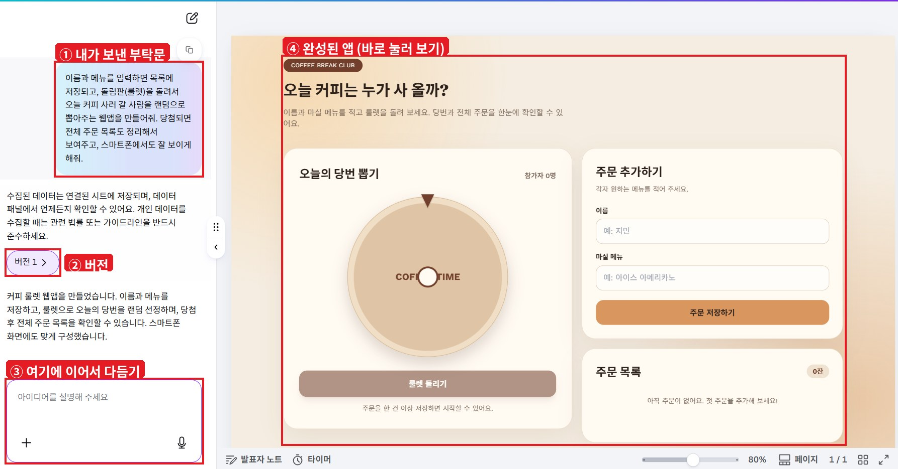
💡 캔바가 "수집된 데이터는 연결된 시트에 저장된다"고 알려 줘요. 캔바 코드로 만든 앱은 입력한 내용을 캔바 데이터 패널(시트)에 모을 수 있어요. 그래서 개인정보는 넣지 않도록 안내해 주세요.
먼저 재미있는 것부터! · 커피 주문 정리 & 커피 셔틀 룰렛
첫 실습은 무조건 "와, 이게 진짜 되네?" 하는 게 좋아요. 이름과 메뉴를 입력하면 주문할 메뉴 개수를 자동으로 정리해 주고, 돌림판으로 오늘 커피 사러 갈 사람까지 뽑아 줘요.
이름과 메뉴를 입력하면 목록에 저장되고, 돌림판(룰렛)을 돌려서 오늘 커피 사러 갈 사람을 랜덤으로 뽑아주는 웹앱을 만들어줘. 당첨되면 전체 주문 목록도 정리해서 보여주고, 스마트폰에서도 잘 보이게 해줘.
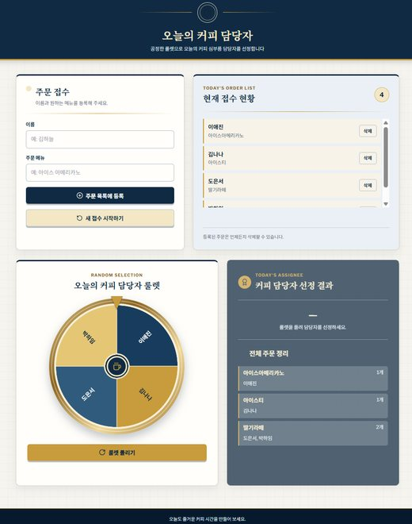
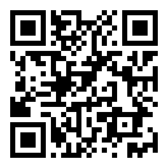
대화하며 완성해 가기 (이게 바이브코딩!)
처음 결과가 나오면, 그걸 보고 "이런 기능 추가해 줘 / 이건 빼 줘"라고 이어서 말하면 원하는 대로 다듬어져요. 아래는 실제로 이렇게 완성해 간 순서예요.
데이터 시트 어디와 연결이 되는 거야? 그리고 이 커피 접수가 한 건이 끝나고 다음 건을 처리할 때는 데이터를 비우고 새로 시작해야 할 것 같은데, 새 접수용 초기화 버튼 만들어줘.
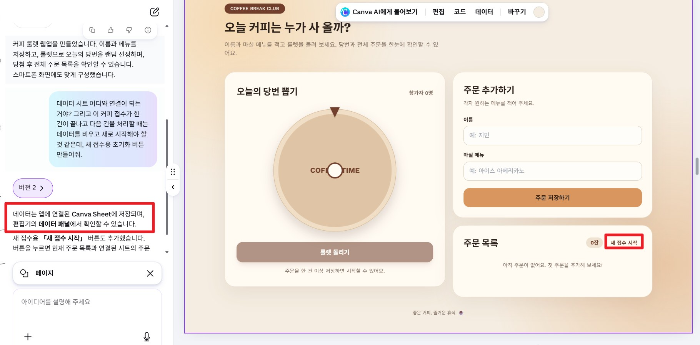
룰렛 돌리는 것과 상관없이 전체 주문은 항상 정리되게 해주고, 같은 메뉴는 개수로 볼 수 있게 아래에 정리해줘. 그래야 주문할 때 편하니까. 전체 주문 정리에서 아이스 아메리카노처럼 각 메뉴를 누르면, 그 메뉴를 신청한 사람들의 이름이 나오게 해줘.
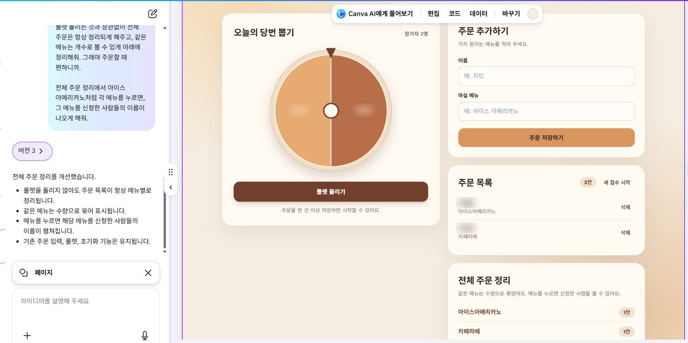
②처럼 부탁 두 개를 한 번에 보내도 돼요. 다만 한꺼번에 많이 시키면 하나가 빠질 수 있으니, 결과를 보고 빠진 것만 다시 부탁하세요.
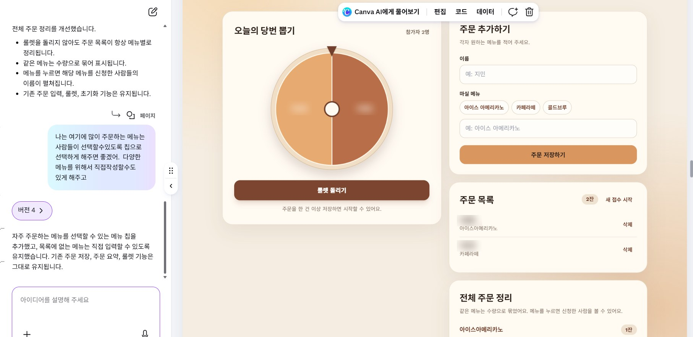
자주 주문하는 메뉴는 버튼(칩)으로 눌러서 고르게 해 줘. 칩 메뉴: 아이스 아메리카노, 따뜻한 아메리카노, 카페라떼, 바닐라라떼, 콜드브루, 녹차라떼, 아이스티, 안 마셔요 칩을 누르면 그 메뉴 이름이 아래 입력칸에 바로 채워지게 해 줘. 칩에 없는 메뉴는 입력칸에 직접 쓰거나, 채워진 이름을 고쳐 쓸 수 있게 해 줘. 주문 저장하기를 누르면 입력칸에 적힌 메뉴로 저장해 줘.
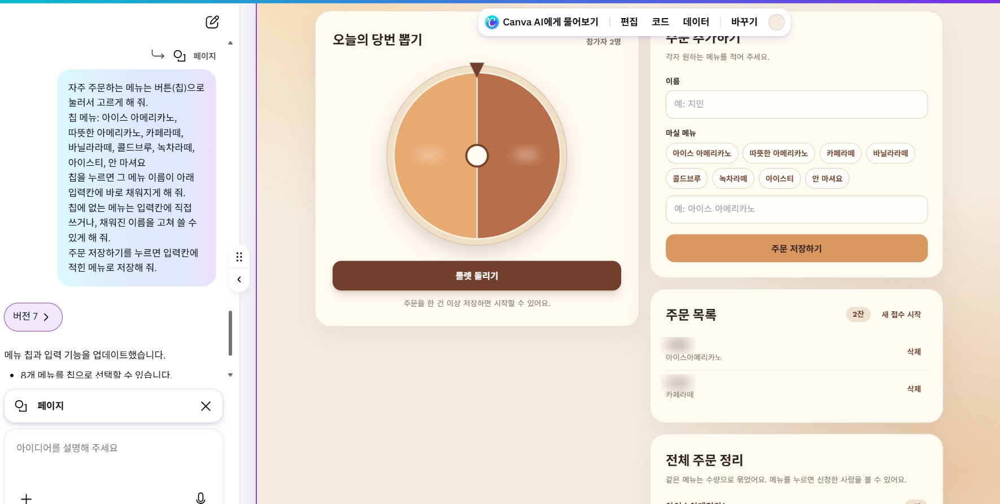
💡 원하는 게 있으면 예시와 동작을 적어 주세요. "메뉴를 칩으로"만 말하면 AI가 메뉴를 알아서 고르고, 칩을 눌렀을 때 어떻게 될지도 제멋대로 정해요. 강사도 처음엔 칩을 눌러도 입력칸이 채워지지 않아서 다시 부탁했어요. 메뉴 목록과 "누르면 입력칸에 채워지게"를 함께 적으면 한 번에 원하는 대로 나와요.
이런 것도 같은 방식으로 · 수업에 바로 쓰는 쉬운 도구
부탁문 한두 줄이면 2~3분 만에 나와요. 오늘 몸풀기로 하나 골라 보세요.
👥 랜덤 조 뽑기 학생 입력 · 교수 모드 · 캔바 시트까지 완성해 본 예시
이름들을 입력하면 원하는 인원수의 조로 랜덤하게 나눠주는 팀·조 뽑기 웹앱을 만들어줘. 결과는 큰 글씨 카드로, 다시 섞기 버튼도 넣어줘.
⚠️ 강사가 해 보니 위 부탁만 하면 교수 혼자 이름을 입력하는 도구가 돼요. 학생이 각자 휴대폰으로 이름을 넣게 하려면 아래처럼 한 번 더 부탁하세요.
학생들이 자기 이름과 학과를 입력할 수 있게 해줘. 그렇게 입력하고 나면 교수인 나만 조 나누기를 누를 수 있게 해줘. 교수 비밀번호는 [숫자 4자리]로 되게 해주고, 조를 나눌 때는 한 조에 같은 학과 학생이 몰리지 않게 골고루 섞어 줘. 조 편성 결과는 조별로 이름과 학과를 함께 보여 주고, PDF로 저장하거나 캔바 시트에 저장되도록 해줘.
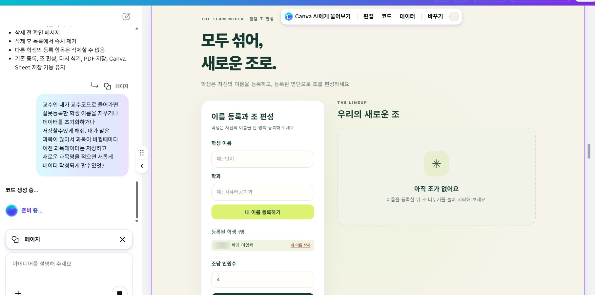
교수인 내가 교수 모드로 들어가면 잘못 등록한 학생 이름을 지우거나, 데이터를 초기화하거나, 저장할 수 있게 해줘. 내가 맡은 과목이 많아서, 과목이 바뀔 때마다 이전 과목 데이터는 저장해 두고 새 과목명을 적으면 새롭게 데이터가 작성되게 해줘.
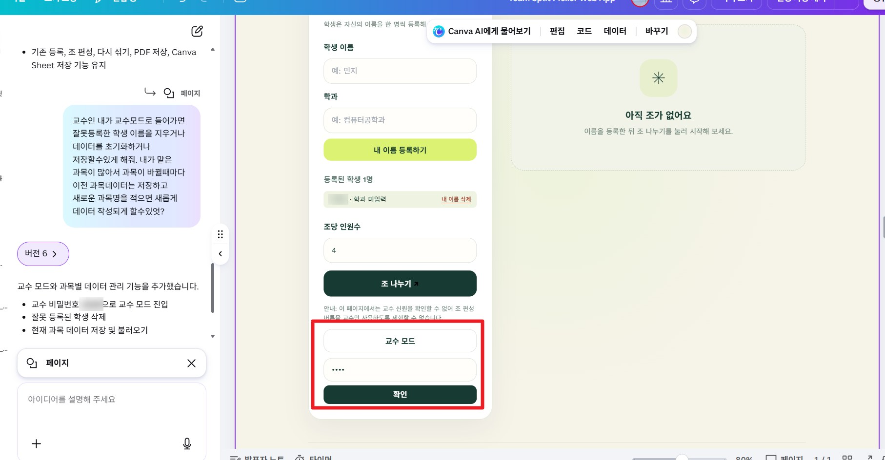
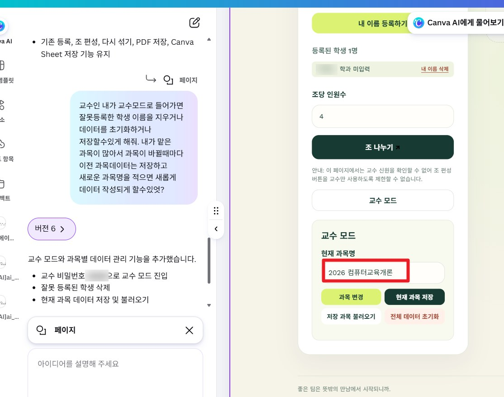
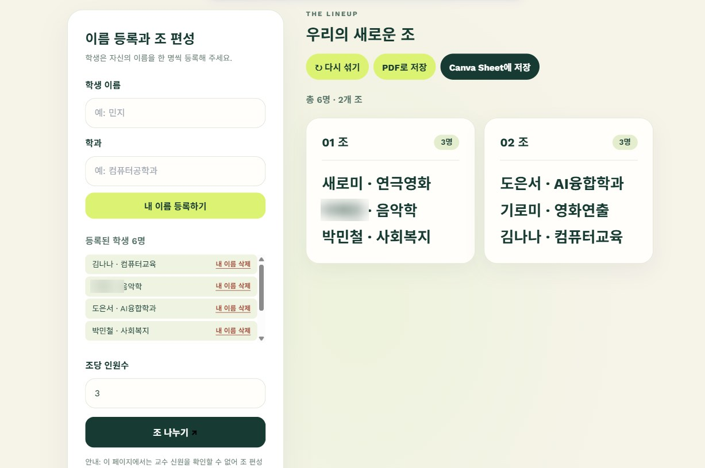
연결된 캔바 시트 찾는 법 · 학생 명단은 어디에 모일까?
- 캔바 편집 화면에서 앱을 한 번 누르면 위에 메뉴가 떠요. 여기서 데이터를 누릅니다
- 왼쪽에 데이터 창이 열리면 연결된 데이터 시트 열기를 누릅니다
- 학생들이 입력한 이름·학과가 캔바 시트에 줄줄이 모여 있어요
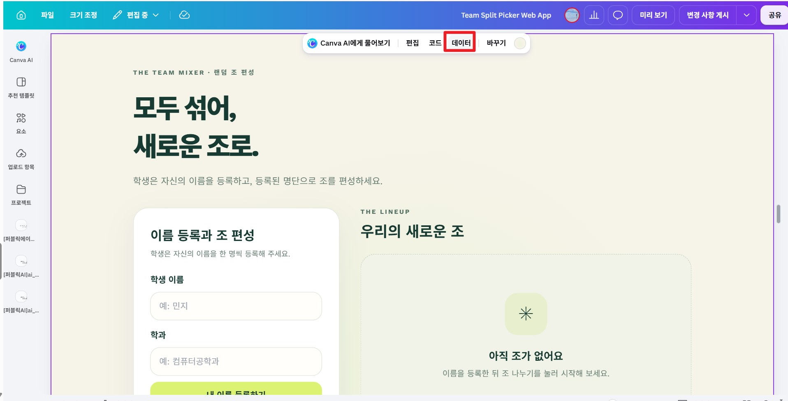
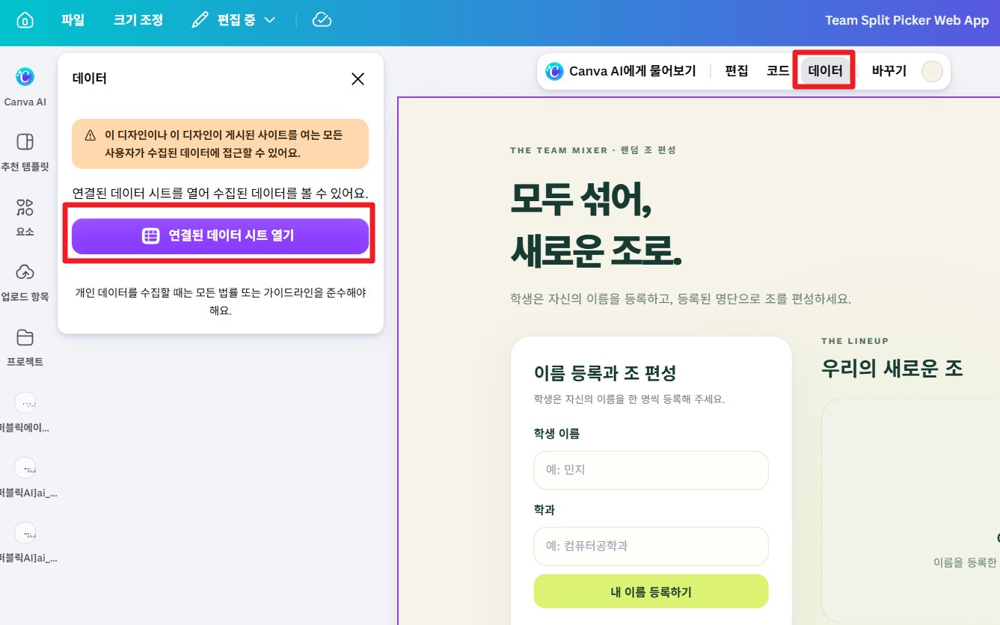
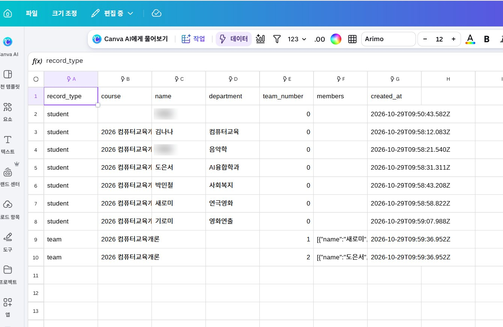
💡 이런 안내 문구를 놓치지 마세요. AI가 "이건 안 돼요"라고 알려 주는 부분이 곧 이 도구의 한계예요. 꼭 막아야 한다면 "조 나누기 단추도 교수 모드 안으로 옮겨 줘"처럼 한 번 더 부탁하세요.
💡 이렇게 내 수업 상황(과목이 여러 개, 잘못 등록하는 학생)을 말해 주면, 몸풀기용 조 뽑기가 한 학기 내내 쓰는 내 수업 도구로 자라요.
💡 [숫자 4자리]에는 교수님만 아는 번호를 넣으세요. 이 비밀번호는 학생이 실수로 누르지 않게 막는 정도예요. 성적처럼 중요한 정보를 지키는 잠금은 아니에요. 학생 이름이 캔바 시트에 모이니, 수업이 끝나면 데이터를 비워 주세요.
🎤 발표 순서 뽑기
이름을 입력하면 발표 순서를 랜덤으로 정해주는 웹앱을 만들어줘. 한 명씩 뽑히는 애니메이션으로 보여주고, 발표가 끝난 사람은 표시할 수 있게 해줘.
🗳️ 즉석 투표
항목을 입력하면 사람들이 눌러서 투표하고 막대그래프로 결과를 보여주는 즉석 투표 웹앱을 만들어줘.
⏰ 수업 활동 타이머
활동 이름과 시간을 입력하면 활동별로 카운트다운 해주는 수업 타이머 웹앱을 만들어줘. 숫자는 강의실 뒤에서도 보이게 아주 크게, 시간이 끝나면 알려줘.
대학 실무에 바로 쓰는 바이브코딩 · 계산기와 살아 있는 안내물
규칙이 들어가서 부탁문이 조금 길어요. ○○에는 내 수업·학과 기준을 넣으세요.
🧮 출석 점수 계산기
결석·지각·조퇴 횟수를 입력하면 출석 점수를 계산해 주는 웹앱을 만들어줘. 규칙: 만점 ○○점, 결석 1회당 ○점 감점, 지각 ○회 = 결석 1회, 결석 ○회 이상이면 경고 표시. 규칙 숫자는 화면에서 바꿀 수 있게 하고, 결과 옆에 계산식도 보여줘. 학생 이름은 받지 마.
🧮 과제 배점 합산 계산기
과제 이름, 반영 비율(%), 받은 점수를 입력하면 최종 점수를 합산하고 항목별 비율을 막대로 보여주는 웹앱을 만들어줘. 비율 합이 100%가 아니면 경고해 주고, 결과 옆에 계산식을 보여줘. 학생 이름은 받지 마.
🧮 상대평가 비율 확인
수강 인원과 학점별 인원(A+, A, B+, B …)을 입력하면 비율을 계산해서, 기준(A학점 ○○% 이내, A+B학점 ○○% 이내)을 넘는지 색으로 알려주는 웹앱을 만들어줘. 기준 비율은 화면에서 바꿀 수 있게 해줘.
🧮 조별 점수 분배
조 점수와 조원별 기여도(동료평가 1~5점)를 입력하면 조원별 점수를 나눠주는 웹앱을 만들어줘. 분배 방식(모두 같게 / 기여도에 비례)을 고를 수 있게 하고, 계산식을 보여줘. 이름 대신 1번, 2번 …으로.
🖐️ 학과 FAQ 안내판
질문과 답을 넣으면 검색창과, 누르면 펼쳐지는 목록으로 보여주는 학과 FAQ 안내 웹앱을 만들어줘. 질문 예시: 수강신청 기간, 휴학 방법, 졸업 요건, 장학금 문의처, 학과 사무실 위치 (답은 ○○로 비워 둬). 휴대폰에서도 잘 보이게.
🖐️ 신입생 체크리스트
신입생이 해야 할 일을 체크하면 진행률 바가 차오르는 체크리스트 웹앱을 만들어줘. 항목 예: 학생증 발급, 수강신청, 학과 오리엔테이션, 지도교수 면담, 동아리 둘러보기. 다 체크하면 축하 화면을 보여줘.
🖐️ 행사·과제 마감 D-day
시작일과 마감일(또는 행사일)을 입력하면 마감까지 며칠 남았는지 D-day로 크게 보여주고, 진행률 바도 함께 보여주는 안내 카운터 웹앱을 만들어줘. 공지용으로 남색+금색 톤으로 깔끔하게.
강사가 해 보니 · 같은 부탁문, 도구마다 다른 결과 제미나이·캔바·클로드 비교
이렇게 비교했어요 교육행정직 연수에서 똑같은 시간외수당 계산기 부탁문을 제미나이·캔바·클로드에 그대로 넣어 봤어요. 부탁문이 같아도 결과는 모두 달랐고, 그때는 클로드 결과가 계산 정확도와 디자인 모두 가장 완성도가 높았어요.
🟣 클로드 결과 보기 ↗ 🔵 제미나이 결과 ↗ 🎨 캔바 결과 ↗
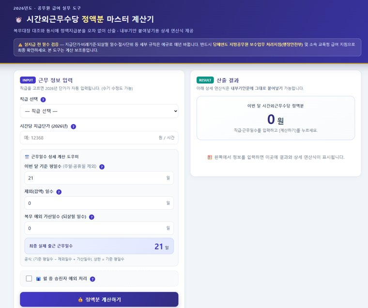
왜 결과가 다를까? · 4가지
- 뒤의 AI가 서로 달라요. 캔바는 웹앱 특화, 제미나이는 범용, 클로드는 긴 지시를 꼼꼼히
- 매번 다르게 나와요. 생성형 AI라 같은 부탁문도 결과가 달라져요
- 해석과 기본 템플릿이 달라요. 부탁문을 이해하는 방식과 출발 템플릿이 도구마다 달라요
- 시작점이 달라요. 디자인 기반이냐, 코드·텍스트 기반이냐
👉 그래서 한 번에 완벽을 기대하지 말고, 여러 번 시켜 보고 가장 나은 걸 고르고 다듬는 것이 정상이자 실력이에요.
웹사이트로 게시하고 패들렛에 올리기
- 오른쪽 위 웹사이트 게시를 누릅니다 (한 번 게시한 뒤 고쳤다면 변경 사항 게시)
- "웹사이트를 게시했어요"가 뜨면 웹사이트 URL(○○.my.canva.site/…)을 복사합니다
- 패들렛 캔바코드_쉽게몸풀기 칸에 "학과 · 앱 이름"으로 올립니다
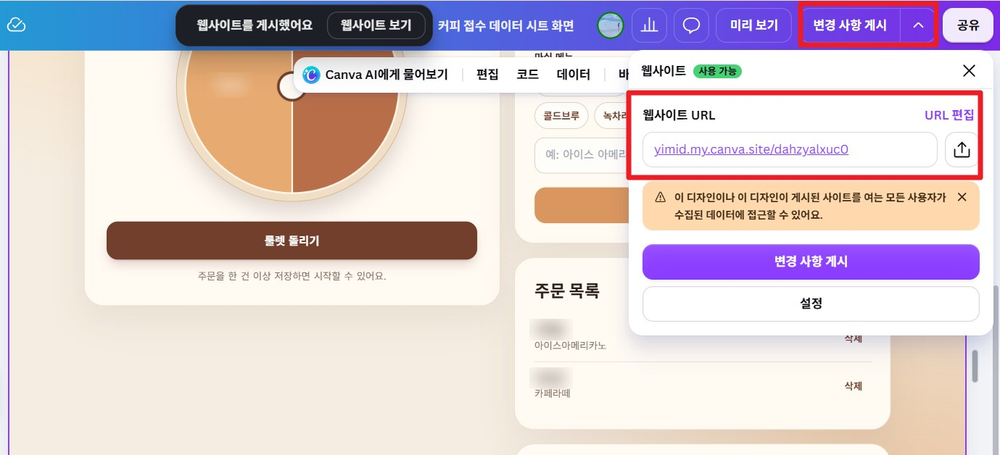
더 해 보기 · 로또·취미 앱 부탁문 ★ 쉬움 골프·공연·산행·와인 · AI 스튜디오로 만들어 본 예시
이렇게 해요 수업 앱에 들어가기 전에, 생활 속 작은 앱을 한두 줄 부탁으로 만들어 봅니다. "말로 부탁하면 앱이 된다"를 먼저 몸으로 느끼는 시간이에요.
- 강사가 오늘의 커피 주문 & 셔틀 룰렛을 보여 주고, 아래 취미 앱 메뉴판(골프·공연·산행·와인) 중 하나를 시연합니다.
- 교수님은 로또 번호 생성기나 내 취미 앱 하나를 골라 따라 만들어 봅니다.
- 만들기: 캔바 Canva AI → 코드 입력칸에 부탁문 붙여 넣기 → 보내기
로또 번호 생성기 웹앱을 만들어 줘. 버튼을 누르면 1~45 중 겹치지 않는 숫자 6개가 공이 굴러가듯 하나씩 나오고, 번호 색은 실제 로또처럼 구간별로 다르게. 기능은 이것만, 한 화면으로 간단하게. 모든 글자는 한국어로.
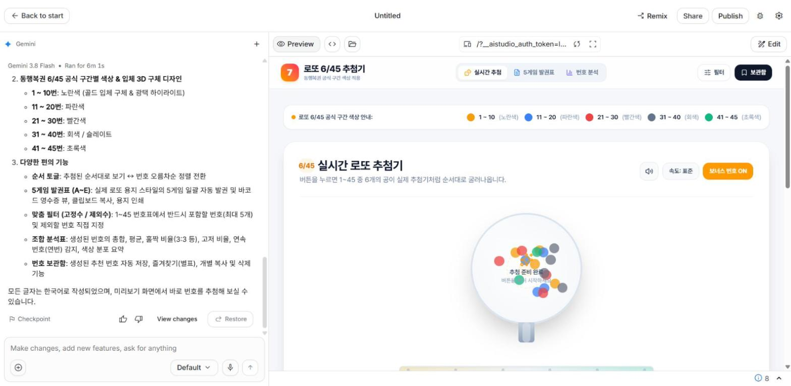
「오늘의 커피 주문 & 셔틀 룰렛」 웹앱을 만들어 줘. 모임에서 휴대폰으로 커피를 주문받고, 주문한 사람 중 한 명을 커피 셔틀로 뽑는 앱이야. [① 주문하기 화면] - 별명 입력 (실명 대신 별명) - 메뉴: 아메리카노 / 카페라떼 / 바닐라라떼 / 녹차라떼 / 아이스티 / 안 마셔요 — 이모지가 있는 큰 카드 버튼 - 온도: HOT / ICE 버튼 - 요청 사항 (선택, 짧게) - [주문하기]를 누르면 별명, 메뉴, 온도, 요청 사항, 주문 시각을 저장하고 "주문 완료! ☕" - 별명이나 메뉴를 안 고르면 무엇이 비었는지 알려 줘 [② 주문 현황 · 룰렛 화면] - 쌓인 모든 주문으로: 총 잔 수, HOT·ICE 개수, 메뉴별 잔 수 막대 - 주문한 사람 목록 (별명 · 메뉴 · 온도 · 요청 사항) - 주문한 사람들의 별명으로 만든 돌림판. [룰렛 돌리기]를 누르면 3초 돌다가 멈추고 "오늘의 커피 셔틀은 ○○님! 🎉"과 축하 효과 [지킬 것] - 위쪽에 ①, ② 탭 두 개 - 따뜻한 커피색, 큰 글씨와 버튼, 휴대폰에서 잘 보이게, 한국어
완성본은 미리 보기용이라 주문이 내 화면 안에서만 쌓여요. 여러 사람의 주문이 한곳에 모이게 하려면 저장소(데이터베이스)가 필요해요. 이건 5단계 백엔드·배포(Firebase)에서 다뤄요.
취미 앱 메뉴판 · 강사가 직접 만들어 본 시간 (AI 스튜디오 기준)
| 취미 앱 | AI가 만드는 데 걸린 시간 |
|---|---|
| ⛳ 골프 스코어 기록 | 약 3분 |
| 🎭 내 공연 관람 노트 | 약 3분 |
| ⛰️ 산행 기록장 | 약 2분 30초 |
| 🍷 와인 테이스팅 노트 | 약 3분 30초 |
| (참고) 로또 생성기, "간단하게" 없이 | 약 18분 + 다시 빌드 6분 |
네 개를 동시에 보냈는데도 모두 2분 30초~3분 30초 만에 끝났어요. 차이를 만든 건 부탁문 끝의 "기능은 이것만, 한 화면으로 간단하게" 한 줄이에요. 연세 있는 분들을 위해 "글씨와 버튼은 크게"도 넣었어요. 앞에 적힌 시간은 AI가 만드는 시간이고, 미리보기가 뜨기까지 몇십 초가 더 걸릴 수 있어요.
⛳ 골프 스코어 기록 약 3분
골프 스코어 기록 웹앱을 만들어 줘. 18홀마다 타수를 입력하면 파 대비 버디·보기가 색으로 표시되고, 마지막에 총타수와 평균을 보여 줘. 기능은 이것만, 한 화면으로 간단하게. 글씨와 버튼은 크게. 모든 글자는 한국어로.
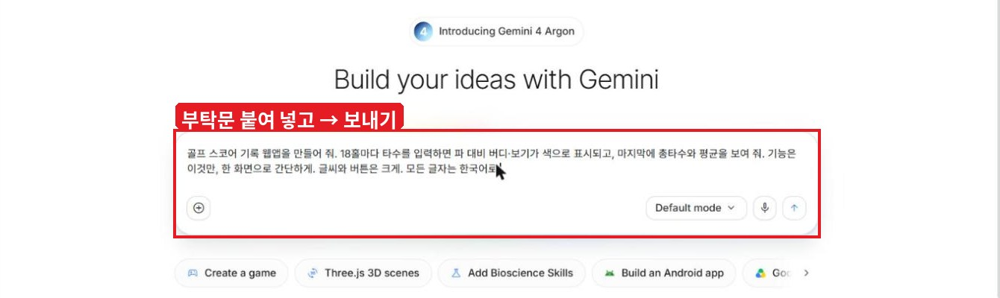
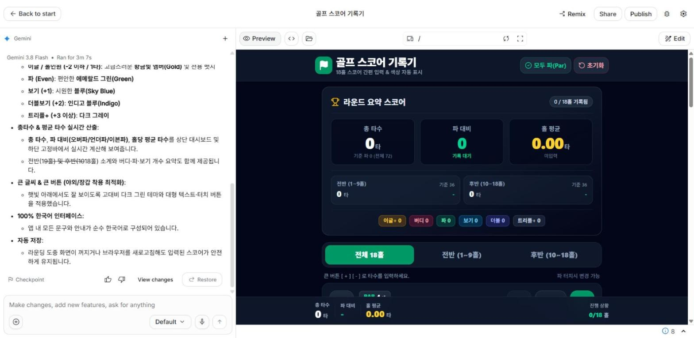
🎭 내 공연 관람 노트 약 3분
내 공연 관람 노트 웹앱을 만들어 줘. 뮤지컬·클래식·연극 중 고르고, 공연명, 날짜, 장소, 별점(5개), 한 줄 감상을 적으면 티켓 모양 카드로 차곡차곡 쌓이고, 위에 올해 본 공연 수를 보여 줘. 기능은 이것만, 한 화면으로 간단하게. 글씨와 버튼은 크게. 모든 글자는 한국어로.
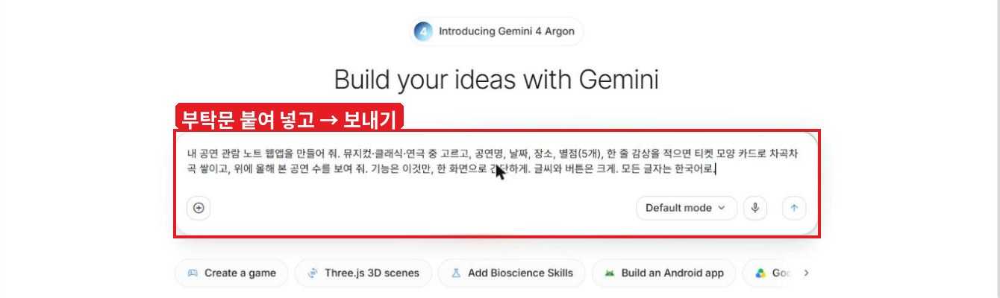
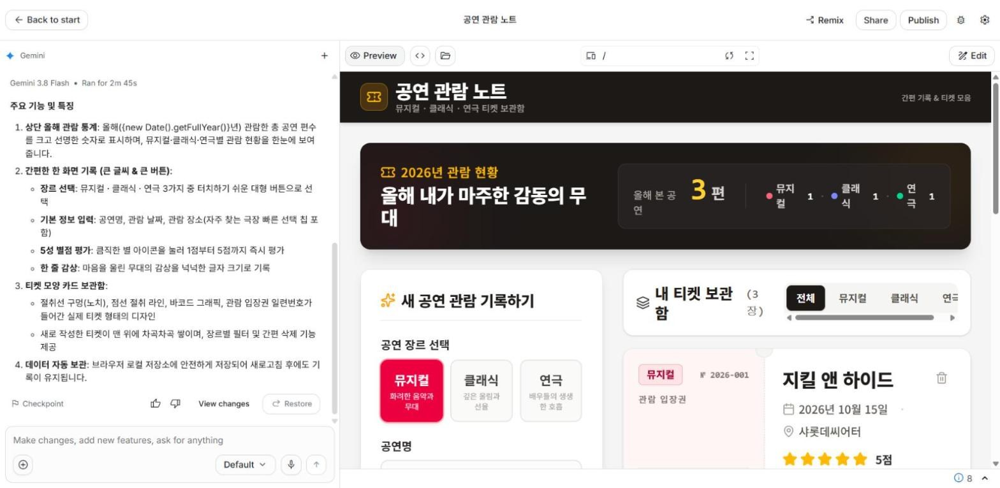
⛰️ 산행 기록장 약 2분 30초
산행 기록장 웹앱을 만들어 줘. 산 이름, 날짜, 함께 간 사람, 걸린 시간, 날씨(맑음·흐림·비·눈 버튼)를 적으면 목록으로 쌓이고, 위에 올해 오른 산 개수와 총 산행 시간을 보여 줘. 기능은 이것만, 한 화면으로 간단하게. 글씨와 버튼은 크게. 모든 글자는 한국어로.
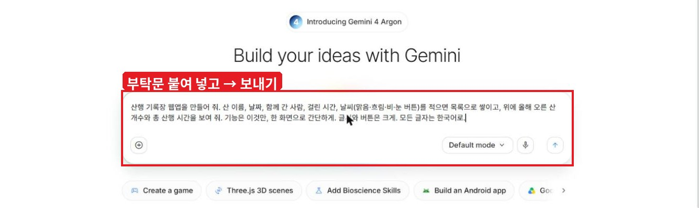
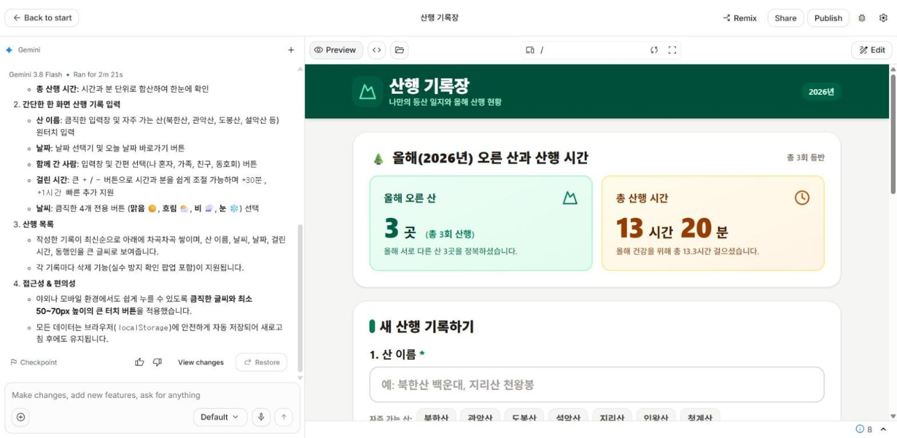
🍷 와인 테이스팅 노트 약 3분 30초
와인 테이스팅 노트 웹앱을 만들어 줘. 와인 이름, 나라, 품종, 가격, 단맛·산미·바디를 1~5 막대로 고르고 한 줄 메모를 적으면 카드로 쌓이고, 별점 높은 순으로 정렬해 줘. 기능은 이것만, 한 화면으로 간단하게. 글씨와 버튼은 크게. 모든 글자는 한국어로.
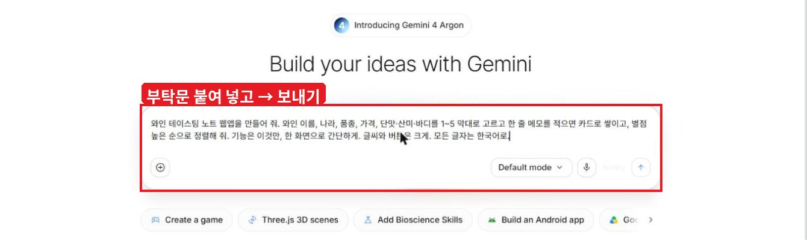
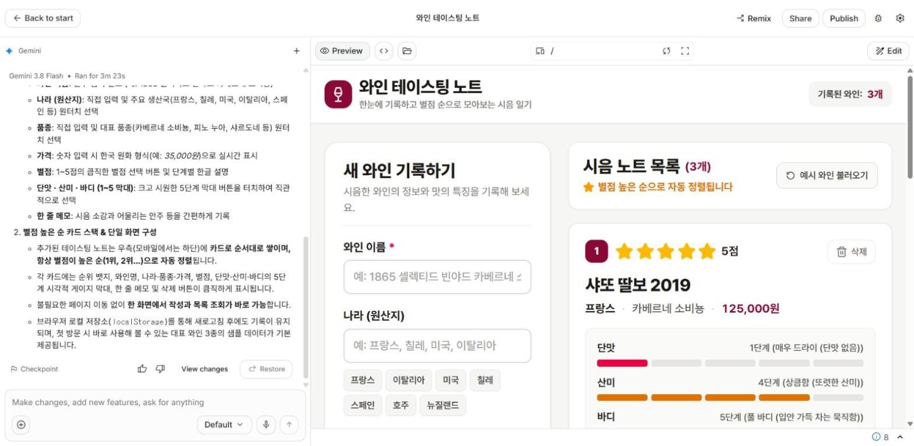
이 짧은 부탁문과, 다음 단계의 긴 수업용 부탁문을 비교해 보세요. 구체적으로 쓸수록 내 수업에 꼭 맞게 나옵니다.
2단계 · 제미나이 캔버스로 학생 과제 내기 25분
제미나이 캔버스는 제미나이 채팅창에서 바로 웹 도구를 만드는 기능이에요. 설치도, 따로 가입할 것도 없어서 학생 과제로 내기 가장 쉬운 바이브코딩 도구입니다. 이 탭은 "학생에게 이렇게 시키면 된다"를 그대로 가져가시도록 만들었어요. 학생에게 줄 부탁문, 학과별 과제 예시, 평가 기준까지 들어 있습니다.
"우리 과목 핵심 용어 10개로 낱말 맞히기 게임 만들어 줘" 한 줄로 첫 작품. 디자인 바꾸기, 힌트 넣기로 두 번 고쳐 봅니다.
학생이 자기 전공과 수업 주제를 넣고 "어떤 웹 도구를 만들면 좋을까?"를 묻습니다.
고른 주제로 만들고, 말로 세 번 고칩니다. 고친 과정이 곧 배움이에요.
공유 링크를 패들렛에 올리고, 성찰 세 문항을 씁니다.
👀 먼저 보기 · 학생들은 이런 걸 만들어요
예시 1 · 조소과 「3D 조형 및 음영 시뮬레이터」 제미나이 캔버스 조소·미술 · 조형론
이렇게 써요 원형(구체·토러스·매듭체 등)을 고르고 부풀리기·밀어넣기·다듬기·평평하게 브러시로 직접 조각해요. 재질(점토·석고·대리석·청동)과 표면 거칠기를 바꾸고, 조명을 돌리면 빛의 방향에 따라 음영과 그림자가 어떻게 달라지는지 바로 보여요.
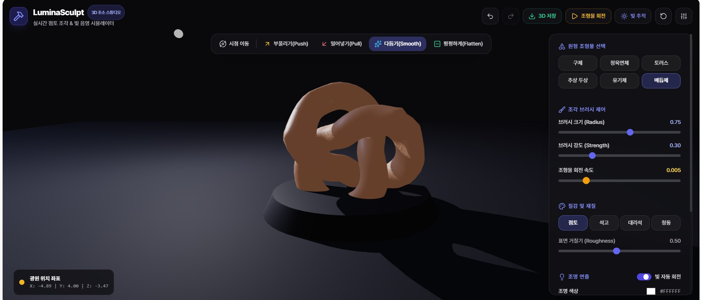
수업 포인트: 학생이 "같은 형태라도 빛의 위치와 재질에 따라 덩어리감이 달라진다"를 직접 조작하며 확인해요. 보고서 ④에는 AI가 만든 재질 설명 중 수업 내용과 다른 부분을 고친 기록을 쓰게 하세요.
예시 2 · 교양 「딜레마 재판소 · 당신이 정의를 판단하세요」 캔바 코드 교양·철학 · 현대사회와 윤리
이렇게 써요 트롤리 딜레마, 자율주행차의 선택, 안락사 청원, 내부고발자, AI 창작물의 저작권까지 다섯 개의 사건 카드 중 하나를 골라 학생이 판사가 되어 판결을 내려요. 고전 윤리학부터 AI 윤리·생명윤리·직업윤리·지적재산권까지 한 화면에서 이어져요.
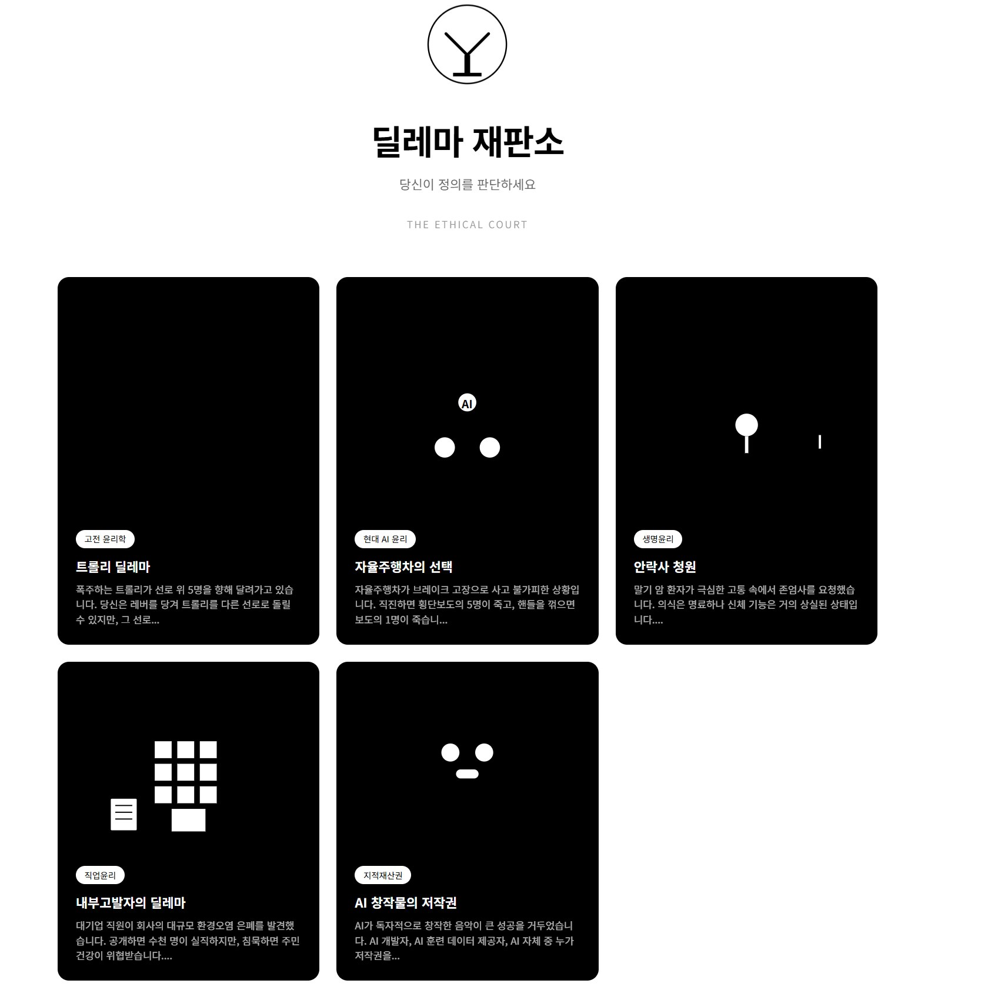
수업 포인트: 같은 사건에 대해 공리주의·의무론 등 입장별로 판결 근거를 써 보게 하세요. 캔바 코드로 만들면 학생들의 판결을 캔바 시트로 모아 다음 시간 토론 자료로 쓸 수 있어요. (1단계 캔바 코드와 같은 도구예요)
예시 3 · 생명과학과 「기질·효소 반응속도 시뮬레이터」 제미나이 캔버스 → 구글 사이트 생명과학 · 효소와 반응속도
이렇게 써요 온도와 기질 농도 슬라이더를 움직이면 3D 공간에서 효소(빨간 공)와 기질(노란 큐브)이 더 빠르게, 더 많이 움직이며 부딪혀요. 충돌해 생성물(초록)이 생길 때마다 아래 반응속도 그래프가 실시간으로 올라가고, 오른쪽에는 충돌 이론·효소-기질 복합체·온도의 영향을 정리한 원리 가이드가 붙어 있어요.
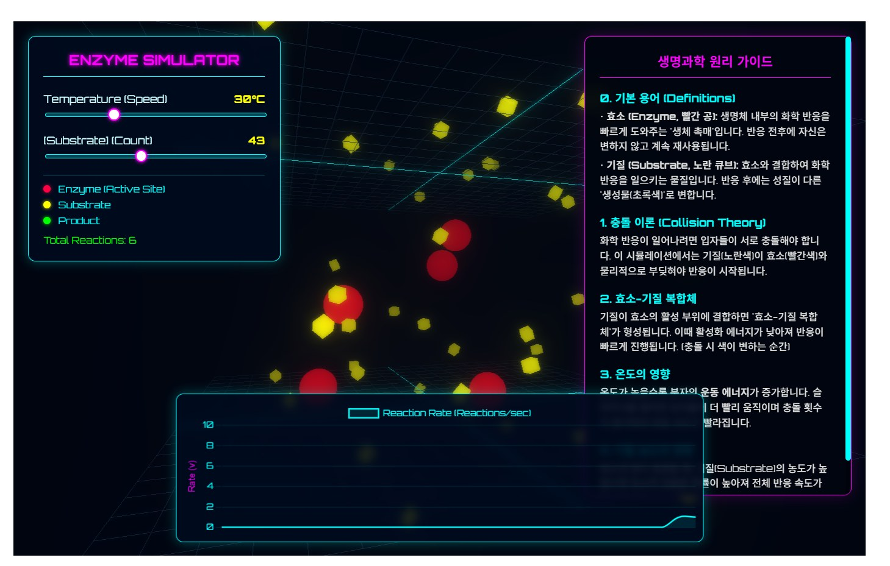
수업 포인트: 교과서의 반응속도 그래프를 학생이 직접 만들어 보는 도구예요. "온도를 계속 올리면 반응속도가 계속 빨라질까?"를 물어 보세요. 실제 효소는 최적 온도를 넘으면 변성되어 느려지는데, AI가 만든 시뮬레이터가 이를 반영했는지 확인하고 고치는 과정이 보고서 ④의 좋은 소재가 돼요. 캔버스로 만든 웹앱을 구글 사이트에 붙여 학생들에게 나눠 줄 수도 있어요.
예시는 계속 추가돼요. 둘러본 뒤 아래 공통 프롬프트로 내 전공 웹앱을 직접 만들어 보세요.
캔버스 켜는 법 (학생 안내용)
- gemini.google.com에 구글 계정으로 로그인
- 입력창 아래 도구(Canvas)를 눌러 캔버스를 켭니다
- 부탁문을 보내면 오른쪽에 코드와 화면이 나와요. 위쪽 미리보기로 바로 해 볼 수 있어요
- 다 만들면 오른쪽 위 공유 → 링크 복사. 이 링크를 과제로 제출합니다
공유 링크를 열면 완성 화면을 바로 볼 수 있어요. 학생이 어떻게 부탁하고 고쳤는지는 제출할 때 부탁문 기록을 같이 내게 하세요. (아래 보고서 양식)
⭐ 공통 프롬프트 · 교수님이 지금 직접 해 보세요
- 아래에서 내 학과를 누르고 ① 프롬프트를 복사해 제미나이(캔버스 켜기)에 보내요
- 추천받은 주제 중 하나를 골라 ② 프롬프트의 [2번 주제]를 바꿔 보내요
- ③처럼 세 번 고쳐 보세요 (특히 3차: 틀린 내용 바로잡기)
- 완성되면 오른쪽 위 공유 → 링크 복사
- 오늘의 패들렛 ↗ 2단계 제미나이캔버스 칸에 학과 · 웹앱 이름 · 공유 링크를 올려요
[ ] 안만 바꿔 쓰면 됩니다. 수업에서는 그대로 복사해서 과제 안내문에 붙여도 돼요.
👇 기본은 [ ] 안을 내 과목으로 바꿔 쓰는 부탁문이에요. 학과를 누르면 [ ] 부분이 그 학과 예시로 채워져요.
위에서 추천한 주제 중 [2번 주제]와 관련하여 웹앱을 만들려고 해. 직접 누르고 바꾸면 화면이 바로 반응하는 동적인 웹앱을 HTML 한 파일로 캔버스에서 만들어 줘. 먼저 이 웹앱의 설계(화면 구성, 기능, 사용 순서)를 짧게 정리해 보여 주고, 바로 그 설계대로 만들어 줘. [꼭 들어갈 것] - 사용자가 직접 누르거나 바꿔 보는 부분 - 화면 아래에 수업 개념을 정리한 설명 두세 줄 - 처음 보는 사람도 알 수 있는 사용 안내 한 줄 [지킬 것] - 설명은 우리 수업에서 배운 용어로, 확실하지 않은 내용은 넣지 마 - 한 화면으로, 휴대폰에서도 잘 보이게, 모든 글자는 한국어로
1차: 버튼 글씨를 크게 하고, 색을 우리 학과 상징색(남색)으로 바꿔 줘. 2차: 끝에 배운 내용을 확인하는 문제 3개를 넣고, 틀리면 이유를 보여 줘. 3차: 설명 중에 수업 자료와 다른 부분이 있어. [○○는 △△가 아니라 □□야]로 고쳐 줘.
3차 고치기가 핵심이에요. 학생이 AI가 틀린 곳을 수업 내용으로 찾아 고치는 순간, 바이브코딩이 전공 공부가 됩니다.
📚 참고용 · 학과별 과제 아이디어와 평가 포인트
실습은 위 공통 프롬프트로 하시고, 이 부분은 수업에서 과제를 낼 때 참고하세요. 학과를 눌러 펼치면 과제 이름, 학생이 만드는 것, 예시 부탁문, 평가 포인트가 있어요. 같은 주제를 4단계 AI 스튜디오에서 더 크게 만든 예시도 이어서 볼 수 있어요.
대학생 과제라면 이런 결과물이 나와요 · 전공별 예시
학생이 공통 ① 주제 추천받기로 자기 전공 주제를 받아 캔버스로 만들 수 있는 웹 도구 예시예요.
| 전공 · 수업 | 학생이 만드는 웹 도구 |
|---|---|
| 조소·미술 · 조형론 | 3D 조소 시뮬레이터 · 재료와 형태를 바꿔 보는 입체 작업대 |
| 건축 · 건축환경계획 | 친환경 모듈러 하우스 · 자재를 고르면 에너지 효율이 바뀌는 시뮬레이터 |
| 간호 · 간호윤리 | 환자 경험 시뮬레이터 · 입원 환자의 하루를 체험하며 공감 역량 키우기 |
| 철학·교양 · 정의론 | 롤스의 '무지의 베일' 시뮬레이터 · 어떤 처지로 태어날지 모른 채 사회 규칙 정하기 |
| 환경공학 · 도시환경 | 도시 열섬 저감 녹지 배치 도구 · 녹지를 놓으면 온도가 내려가는 지도 |
| 경영 · 마케팅원론 | 비건 뷰티 브랜드 런칭 페이지 · STP 분석과 브랜드 소개 |
| 문헌정보 · 독서치료 | 개인 맞춤형 서재 테라피 · 고민을 고르면 책을 처방해 주는 서재 |
📝 학생 결과물 평가하기 · 결과물 + 보고서
바이브코딩 과제는 "잘 돌아가는 앱"만 보면 AI 실력을 평가하게 돼요. 결과물(공유 링크)과 보고서(어떻게 만들고 고쳤는지)를 함께 받아야 학생의 전공 이해를 평가할 수 있어요.
캔버스 공유 링크. 교수님이 직접 눌러 보며 확인해요.
A4 1~2쪽. 설계, 부탁문 기록, AI가 틀린 곳과 고친 과정, 성찰.
아래 루브릭으로 채점. 피드백 초안은 AI에게 맡길 수 있어요.
[바이브코딩 과제 제출물] 1. 결과물: 제미나이 캔버스 공유 링크 (링크를 열면 바로 실행되는지 확인 후 제출) 2. 보고서 (A4 1~2쪽, 아래 순서대로) ① 주제와 수업 개념: 어떤 수업 개념을, 사용자가 무엇을 조작하며 이해하게 하나요? ② 설계: 화면 구성과 사용 순서 (AI가 보여 준 설계를 그대로 붙여도 됨) ③ 부탁문 기록: 처음 부탁문과 고친 부탁문 3개를 그대로 붙여 넣기 ④ AI가 틀린 곳: 수업 내용과 달랐던 부분, 근거(교재·강의자료 몇 쪽), 어떻게 고치라고 했는지 ⑤ 성찰: 다시 만든다면 무엇을 더하고 싶나요? ※ 이름·학번·연락처를 받는 화면은 만들지 않기 / 교재 본문을 통째로 붙여 넣지 않기
평가 루브릭 (예시 · 100점)
| 평가 항목 (배점) | 우수 | 보통 | 미흡 |
|---|---|---|---|
| 내용 정확성 (30) 결과물 + 보고서 ④ | 개념·용어·공식이 수업과 일치하고, AI 오류를 근거와 함께 찾아 고침 | 대체로 맞지만 오류 한두 곳이 남아 있음 | 수업 내용과 다르거나 확인하지 않음 |
| 조작 설계 (25) 결과물 | 눌러 보고 바꿔 보는 과정에서 개념이 이해되게 설계됨 | 조작은 있으나 개념과의 연결이 약함 | 읽기만 하는 화면 |
| 고친 과정 (25) 보고서 ③④ | 부탁문 기록이 구체적이고, 무엇을 왜 고쳤는지 분명함 | 고친 기록은 있으나 이유가 부족함 | 처음 결과를 그대로 제출 |
| 설명과 성찰 (20) 보고서 ①②⑤ | 개념을 자기 말로 설명하고 개선 방향이 구체적임 | 설명은 있으나 일반적임 | 설명·성찰이 거의 없음 |
배점은 과목에 맞게 바꾸세요. 핵심은 "앱이 화려한가"가 아니라 "AI가 틀린 곳을 전공 지식으로 찾아 고쳤는가"예요. 그래서 보고서 ④가 가장 중요해요.
너는 대학 [과목명] 수업의 채점 보조야. 아래 루브릭으로 학생 보고서를 읽고 피드백 초안을 써 줘. [루브릭] - 내용 정확성(30): 개념·용어·공식이 수업과 맞는가, AI 오류를 근거와 함께 고쳤는가 - 조작 설계(25): 조작하며 개념을 이해하게 만들었는가 - 고친 과정(25): 부탁문 기록이 구체적이고 고친 이유가 분명한가 - 설명과 성찰(20): 개념을 자기 말로 설명하고 개선 방향이 구체적인가 [쓸 것] 1. 항목별로 우수·보통·미흡 중 하나와 그 이유 (보고서 문장을 짧게 인용) 2. 잘한 점 2개, 보완할 점 2개 (학생에게 그대로 줄 수 있는 말투로) 3. 내용 정확성은 판단하기 어려우면 "교수 확인 필요"라고 쓰기. 점수를 지어내지 마. [학생 보고서] (이름·학번을 지운 보고서를 여기에 붙여 넣기)
- 보고서에서 이름·학번을 지우고 넣으세요. 학생 개인정보는 AI에 넣지 않습니다
- AI는 피드백 초안까지만. 결과물 링크는 교수님이 직접 눌러 보고, 점수는 교수님이 정합니다
- 수업 자료와 맞는지는 AI가 판단하기 어려워요. 정확한 대조가 필요하면 3단계 노트북LM에 강의자료를 넣고 확인하세요
- 이름·학번·연락처를 받는 화면은 만들지 않기
- 교재 본문을 통째로 붙여 넣지 않기. 수업 노트·요약은 괜찮아요
- 캔버스로 만든 도구는 내 화면에서만 기록이 남아요. 여러 사람의 답을 모으려면 저장소가 필요해요(AI 스튜디오 + Firebase 심화)
"어, 공식이 우리 수업이랑 다르네?" "예제 답이 틀렸어요." 캔버스는 제목만 듣고 일반적인 내용으로 만들기 때문이에요. 내 수업 자료를 알려 주면 해결됩니다. → 3단계 노트북LM으로 넘어가요.
3단계 · 노트북LM에서 근거가 있는 바이브코딩으로
"AI는 강의계획서의 제목만 압니다. 내용을 알려 주면 내 수업 그대로 만듭니다." 캔버스에서 느낀 한계는 대부분 AI가 내 수업 자료를 모르기 때문이에요. 노트북LM에 자료를 올리고 "이런 바이브코딩을 하고 싶다"고 말하면, 자료를 근거로 설계서와 부탁문을 써 줍니다.
| 제목만 주면 (캔버스만) | 내 자료를 주면 (노트북LM → 캔버스) | |
|---|---|---|
| AI가 하는 일 | 추측해서 일반적인 내용으로 만듦 | 내 자료를 인용해서 만듦 |
| 예: 12주차 상대위험도 계산기 | 칸 배치를 잘못 짚어 RR 4.28 (틀림) | 강의자료의 칸 배치대로 RR 2.85 (정답) |
| 확인 방법 | 내가 처음부터 다 확인해야 함 | 답 옆 출처 숫자를 눌러 자료의 어느 줄인지 바로 확인 |
내 강의자료를 올리거나 딥리서치로 과목 자료를 모읍니다.
"이런 바이브코딩을 하고 싶다"며 자료 근거로 도구 3개를 추천받습니다.
공식·예제·정답·출처가 든 설계서를 받습니다.
제미나이에 노트북을 붙이고 캔버스로 화면을 만듭니다.
자료의 예제를 넣어 정답과 같은지 확인합니다.
노트북LM에서 · 딥리서치로 내 과목 자료 모으기 (교수님 직접 해 보기)
- notebooklm.google.com → 새 노트북 만들기
- 소스 추가 창의 검색칸에서 Deep Research(자세히) 또는 Fast Research(빠르게)를 고릅니다
- 아래 부탁문의 [ ] 두 곳을 내 과목으로 바꿔 넣고 검색합니다
👇 예시를 누르면 부탁문이 그 과목으로 바뀌어요. 기본으로 돌아가 [ ]만 내 과목으로 바꿔 쓰세요.
[과목명]의 [핵심 주제]에 대해 대학 전공 수업에서 쓸 수 있는 자료를 찾아 줘. 학술 논문, 대학 강의자료(KOCW 등), 정부·공공기관 보고서, 학회 자료 위주로 찾아 주고, 개인 블로그, 광고, 쇼핑몰, 뉴스 요약 기사는 빼 줘. 한국 자료와 영어 학술 자료를 함께 찾아 줘.
바로 다 넣지 마세요. 찾아 온 자료 목록에서 출처를 훑어보고, 블로그·광고성 자료는 체크를 풀고 가져옵니다. AI가 찾아도 고르는 건 교수님이어야 근거가 됩니다.
교재 PDF도 올릴 수 있지만, 저작권이 있는 교재를 올린 노트북은 학생에게 공유하지 마세요. 공유할 노트북에는 공개 자료와 직접 만든 강의자료를 넣습니다.
노트북LM에서 · "이런 바이브코딩을 하고 싶어"
이 노트북의 자료만 근거로, 내 수업에서 학생이 직접 조작하거나 연습하며 이해할 웹 도구 3개를 추천해 줘. | 번호 | 도구 이름 | 근거 자료와 쪽 | 학생이 하는 일 | 들어갈 공식·데이터 | 자료에 없는 내용은 쓰지 말고, 계산이 들어가는 도구를 1개 이상 넣어 줘.
답 옆의 숫자 단추가 출처예요. 눌러 보면 내 자료의 어느 줄에서 왔는지 보입니다.
노트북LM에서 · 설계서 받기
○번 도구의 설계서를 써 줘. 이 노트북의 자료만 근거로. ① 화면 구성 ② 입력 항목과 단위·범위 ③ 공식 (자료에 있는 그대로, 출처 쪽 표시) ④ 반올림·예외 규칙 ⑤ 자료에 있는 예제와 정답 3개 (출처 표시) ⑥ 화면에 넣을 용어 설명 자료에 없는 항목은 지어내지 말고 "자료에 없음"이라고 써 줘.
제미나이에서 · 노트북을 붙여 캔버스로 만들기
- gemini.google.com 새 채팅 → 입력창의 + → NotebookLM → 내 노트북 고르기
- 캔버스를 켜고 아래 부탁문 끝에 ③에서 받은 설계서를 붙여 넣어 보냅니다
붙인 노트북의 자료만 근거로, 아래 설계서대로 학생용 웹 도구를 만들어 줘. - 공식, 용어, 칸 배치, 반올림 규칙은 노트북 자료에 있는 그대로 - 계산은 AI를 부르지 말고 화면 안의 계산식으로 하고, 결과 옆에 계산식을 보여 줘 - 로그인 없이 휴대폰에서, 이름·학번은 받지 마, 한국어 [설계서 붙여 넣기]
+ 메뉴에 NotebookLM이 안 보이면 제미나이에 PDF를 직접 첨부하고, 부탁문의 "붙인 노트북"을 "첨부한 자료"로 바꾸세요.
정답과 대조하기
이 화면의 계산식이 노트북 자료의 공식·칸 배치와 같은지 한 줄씩 대조해 줘. 그리고 자료의 예제 3개를 파이썬 코드를 실제로 실행해서 계산하고, 화면에 나와야 할 값과 함께 표로 보여 줘. 아직 고치지는 마.
자료에 있는 예제를 직접 넣어 보고, 정답과 다르면 "○번 예제가 □□로 나와야 해. 자료대로 고쳐 줘."라고 보내세요.
학생 과제로도 그대로
2단계 학생 과제에 한 줄만 더하면 됩니다. "이번 주 강의 노트를 노트북LM에 올리고, 설계서를 받아서 만들 것. 설계서도 함께 제출." 이러면 AI가 지어낸 내용이 아니라 우리 수업 내용으로 만든 도구가 나오고, 학생은 자료를 다시 읽게 됩니다.
| 자주 묻는 질문 | 답 |
|---|---|
| 노트북LM에서 바로 코드를 받으면 안 되나요? | 받을 수는 있지만 화면을 미리 보거나 실행할 수 없어요. 설계서는 노트북LM, 화면은 캔버스가 안정적입니다. |
| 교재 PDF를 통째로 올려도 되나요? | 내 노트북 안에서 혼자 쓰는 건 괜찮아요. 다만 공유하는 도구에 교재 본문을 그대로 넣지는 마세요. 내가 만든 강의자료가 가장 안전합니다. |
| 학생 과제나 성적 파일도 넣어도 되나요? | 넣지 않습니다. 이름·학번·성적이 든 파일은 올리지 않아요. |
| 노트북LM도 틀리나요? | 덜 틀리지만 틀릴 수 있어요. 그래서 출처 단추와 예제 정답 대조를 함께 합니다. |
이렇게 만든 설계서는 4단계 AI 스튜디오에 그대로 넣어도 돼요. 더 화려한 화면과 앱 안 AI가 필요할 때 넘어가면 됩니다.
구글이 만들어 둔 멋진 게임을 하나 골라 "이 게임을 내 수업 내용으로 바꿔 줘"라고 말하면, AI가 코드를 고쳐 내 과목 게임으로 바꿔 줍니다. 이것을 리믹스라고 해요. 흐름은 강사 시연(체스·단어 퍼즐) → 템플릿 고르기 → 리믹스 → 공유 순서예요.
- 시연 ① 체스를 보며 "템플릿의 내용만 바꾸면 수업 활동이 된다"를 확인하기
- 시간이 되면 템플릿 고르기에서 ★ 쉬운 것 하나를 골라 리믹스 한 번 해 보기
나머지 탭(단어 퍼즐 · 공유 · 활용 사례)은 연수 후에 혼자 따라 하실 수 있게 순서대로 적어 두었어요. 이 교안 링크를 저장해 두세요.
- 빈 화면에서 시작하지 않아요. 화면, 효과, 게임 규칙은 이미 완성되어 있고, 우리는 내용만 바꿉니다.
- 이것이 바이브코딩이에요. 코드를 한 줄도 쓰지 않고, 말로 부탁하고 결과를 보고 다시 말로 고칩니다.
- 학생과도 똑같이 할 수 있어요. 오늘 교수님이 하신 활동을 학생 팀 과제로 그대로 낼 수 있습니다. (공유·활용하기 탭에서 안내)
AI 스튜디오 시작 전 준비
- 크롬에서 개인 Gmail로 로그인 (학교 계정은 AI 스튜디오가 막혀 있을 수 있어요)
- aistudio.google.com/apps 접속 → 처음이면 약관 동의
- 크롬 자동 번역은 끄기 (부탁문과 화면 글자가 엉킬 수 있어요)
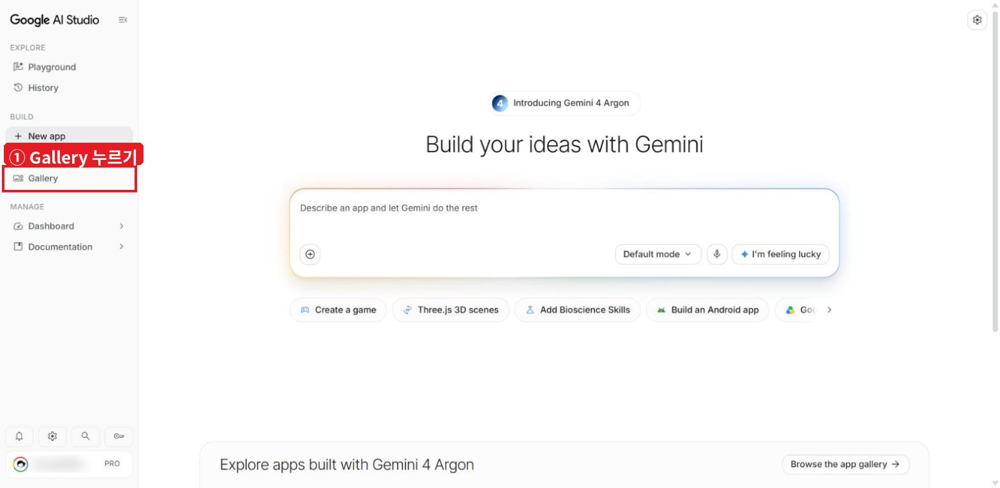
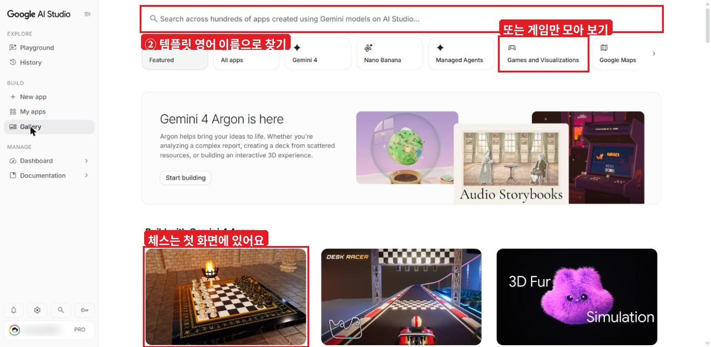
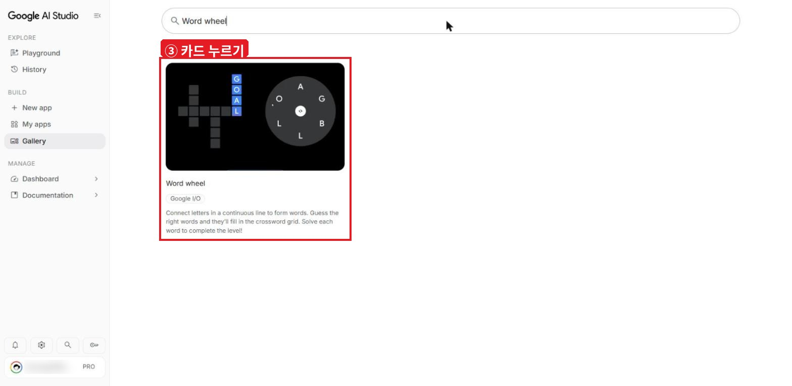
강사 시연 ① 무거운 템플릿: 체스 3분 · 완성본만
3D 체스를 '개념 체스'로 바꾼 완성본을 3분만 함께 둬 봅니다. 상대 말을 잡으려면 수업 문제를 맞혀야 해요. 예시는 간호 과목이지만, 보실 것은 하나예요. 게임의 규칙(잡으려면 맞혀야 한다)이 그대로 수업 활동이 된다는 것. 무거운 템플릿이라 만드는 데 9분쯤 걸려서, 오늘은 만들지 않고 완성본만 봅니다.
원본 먼저 해 보기 강사 화면
Wizard Chess 3D: 고딕 성당 분위기의 3D 마법사 체스. 말을 잡을 때 돌조각이 부서지는 연출이 있고, 컴퓨터와 대결합니다.
Wizard Chess 3D 원본 열기 간호 개념 체스 완성본 ↗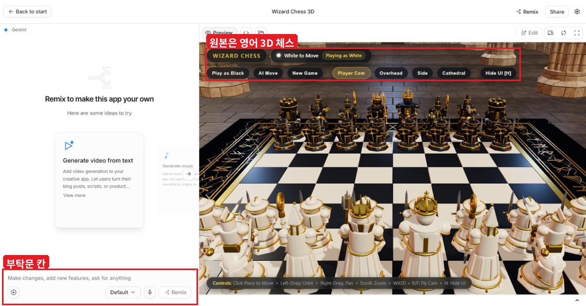
참고: 강사가 체스를 만든 과정과 부탁문 접어 두기
리믹스 부탁문 보내기 강사 화면
지금 이 체스 게임을 내 대학 수업용 '개념 체스'로 바꿔 줘. [내 수업] - 과목: 기본간호학 - 이번 주제: 활력징후 측정 - 학생: 간호학과 1~2학년 [바꾸는 방법] - 상대 말을 잡으려고 할 때마다 아래 [수업 내용]에서 문제 하나가 4지선다로 나오게 해 줘. 맞히면 말을 잡고, 틀리면 잡지 못하고 차례가 넘어가. - 문제를 틀리면 정답과 한 줄 설명을 보여 줘. - 화면 옆에 '맞힌 문제 / 푼 문제' 숫자를 보여 줘. - 3D 체스판과 멋진 연출은 그대로 살리고, 화면의 모든 글자는 한국어로 바꿔 줘. - 시작 화면에 과목명과 "오늘의 학습 목표: 활력징후의 정상 범위와 용어를 구분한다"를 보여 줘. - 문제는 아래 [수업 내용]에 있는 것만 쓰고, 없는 내용은 지어내지 마. [수업 내용] 1. 정상 성인의 안정 시 맥박 수: 1분에 60~100회 2. 정상 성인의 호흡 수: 1분에 12~20회 3. 맥박이 1분에 100회를 넘는 것: 빈맥 4. 맥박이 1분에 60회보다 적은 것: 서맥 5. 호흡이 일시적으로 멈춘 상태: 무호흡 6. 맥박을 잴 때 가장 흔히 쓰는 부위: 요골동맥(손목) 7. 수축기 혈압과 이완기 혈압의 차이: 맥압 8. 정상 산소포화도(SpO₂): 대략 95~100%
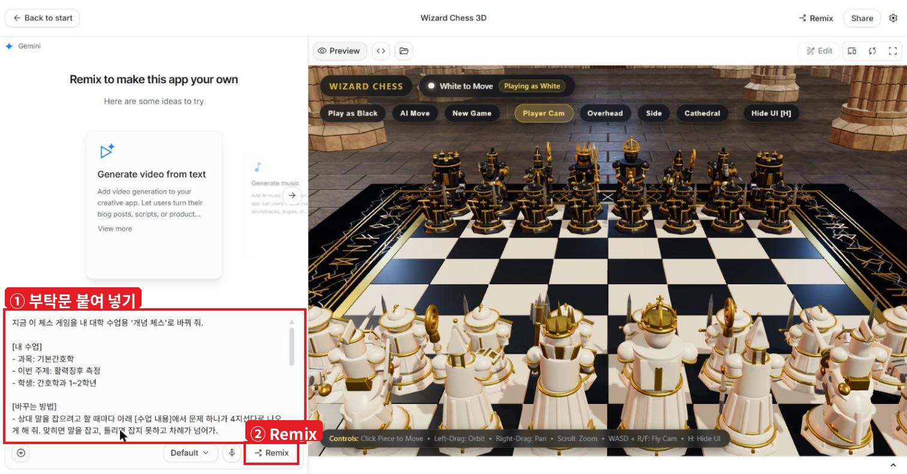
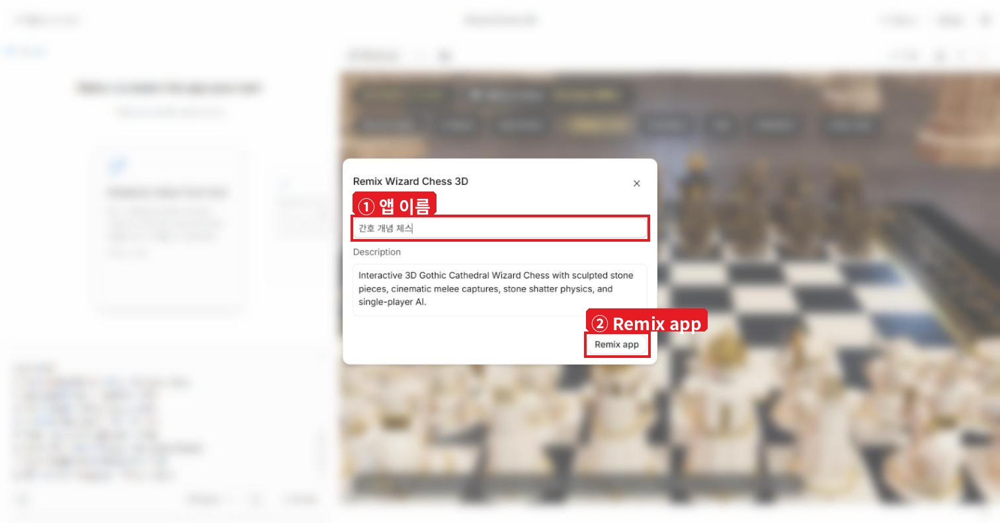
강사가 해 보니 약 9분 걸렸어요. 시연 때는 미리 만들어 둔 완성본을 보여 주세요.
완성본 보기
말을 잡으려는 순간 문제가 뜨고, 맞혀야 잡히는 모습을 봅니다. 미리보기 화면에서 직접 한 판 둬 봅니다.
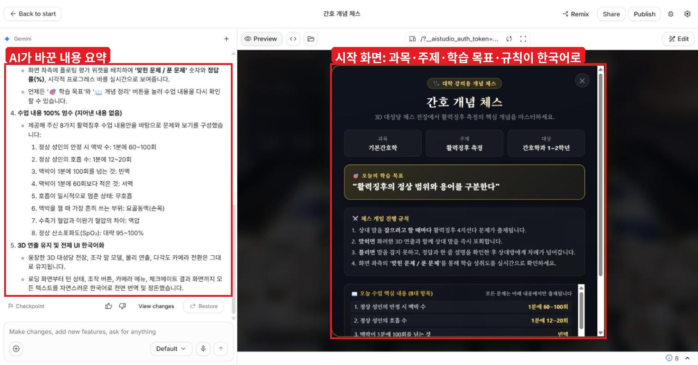
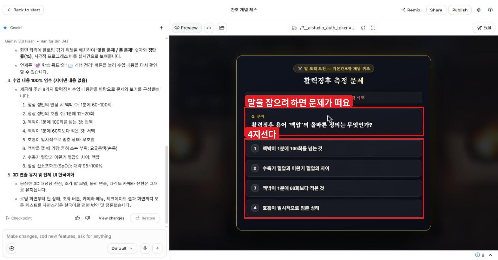
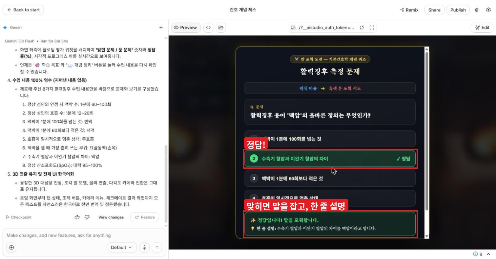
강사 시연 ② 가벼운 템플릿: 단어 퍼즐 10분
글자를 이어 단어를 만드는 퍼즐 Word wheel을 '생성형 AI 핵심 용어 퍼즐'로 바꿉니다. 교수님들이 함께 풀면서 프롬프트·환각·에이전트·바이브코딩 같은 요즘 용어도 익힐 수 있어요. 강사는 부탁문을 먼저 보내 놓고, 기다리는 동안 다음 탭의 템플릿 메뉴판을 함께 봅니다.
템플릿 열기
Word wheel: 동그란 바퀴의 글자를 한 번에 이어 단어를 만들면 가로세로 퍼즐 칸이 채워지는 게임입니다. 용어와 뜻만 바꾸면 어느 과목이든 됩니다.
Word wheel 원본 열기 생성형 AI 용어 퍼즐 완성본 ↗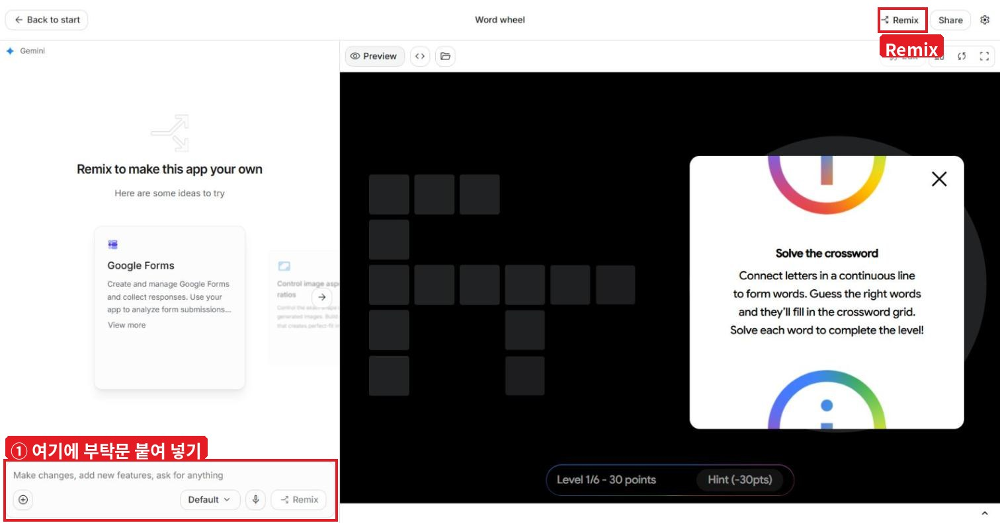
부탁문 붙여 넣고 Remix
지금 이 단어 퍼즐 게임을 내 대학 수업용으로 바꿔 줘. [내 수업] - 과목: AI 리터러시 - 이번 주제: 꼭 알아야 할 생성형 AI 핵심 용어 - 학생: AI를 처음 제대로 배우는 성인 학습자 [바꾸는 방법] - 바퀴의 글자를 한글 글자로 바꾸고, 가로세로 퍼즐의 정답 단어를 아래 [수업 내용]의 용어로 바꿔 줘. - 단어를 맞히면 그 용어의 뜻을 크게 보여 줘. - 게임 방식과 화면 분위기는 그대로 두고, 안내 글자는 모두 한국어로. - 용어와 뜻은 아래 [수업 내용]에 있는 것만 써 줘. [수업 내용] 프롬프트: AI에게 주는 지시나 질문 환각: AI가 사실이 아닌 내용을 그럴듯하게 만드는 것 검증: AI가 만든 내용이 맞는지 사람이 확인하는 것 개인정보: 학생 이름·학번처럼 AI에 함부로 넣으면 안 되는 정보 딥페이크: AI로 만든 가짜 얼굴·목소리 에이전트: 목표를 주면 스스로 계획하고 여러 단계를 실행하는 AI 바이브코딩: 코드를 직접 쓰지 않고 말로 부탁해 프로그램을 만드는 것 멀티모달: 글·사진·소리를 함께 알아듣는 AI 토큰: AI가 글을 나눠 읽는 작은 단위 챗봇: 대화하는 AI 프로그램
강의자료가 있다면 대화창의 ＋로 PDF를 첨부하고, [수업 내용] 칸에 "첨부 자료에서 꼭 필요한 쉬운 용어 8개"라고만 써도 돼요. 퍼즐이라 2~5글자짜리 짧은 용어가 잘 맞아요.
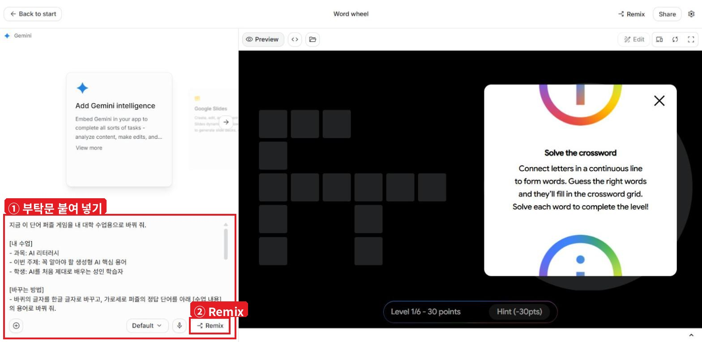
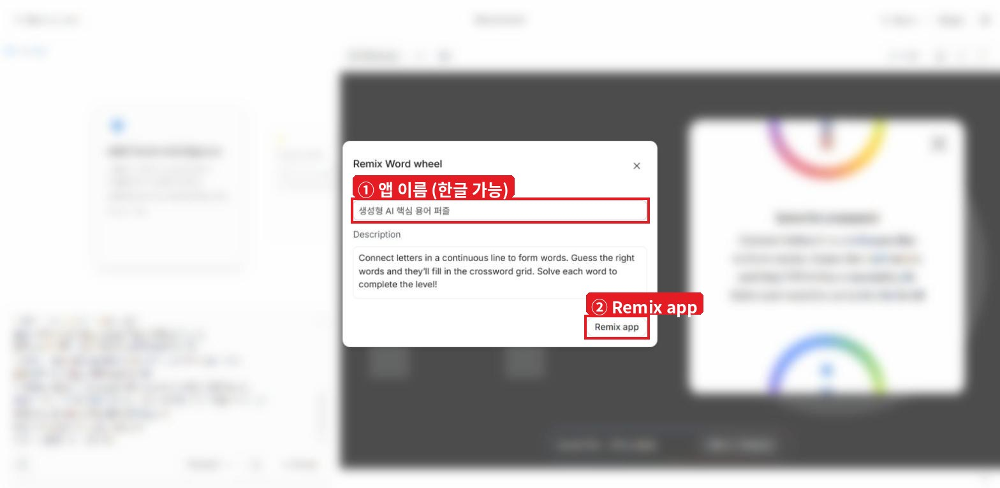
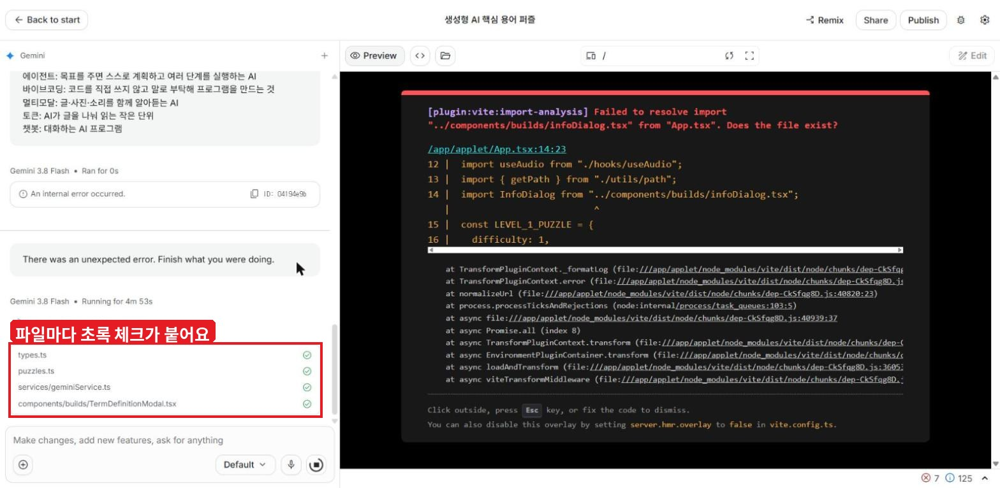
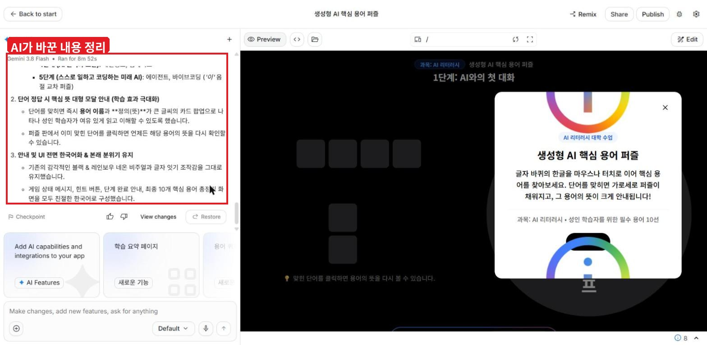
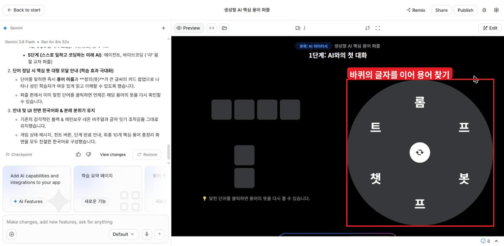
✓ 바퀴에 한글 글자가 나오고, 용어를 맞히면 뜻이 뜨면 성공
말로 한 번 더 고치기
마음에 안 드는 곳은 딱 한 가지씩 말로 고칩니다.
- 퍼즐을 다 풀면 오늘 배운 용어 10개를 한 장의 용어 카드로 정리해 보여 줘. 다른 부분은 그대로 둬.
- 글자를 더 크게, 강의실 화면에 띄워도 잘 보이게 바꿔 줘. 다른 부분은 그대로 둬.
- 단계마다 용어를 하나씩 맞히면 '교수님 한마디'로 수업에서 이 용어를 어떻게 쓰면 좋은지 한 줄 팁을 보여 줘. 다른 부분은 그대로 둬.
처음 계획했던 중국어 식당 단어 퍼즐은 '리믹스 활용 사례' 탭에 참고용으로 남겨 두었어요.
4단계-1 · 내 수업·업무에 맞는 템플릿 고르기 5분
오늘 오신 학과·부서를 누르면 어울리는 템플릿에 추천 표시가 붙고 앞으로 모입니다. 카드 아래 예)에 내 학과에서 쓸 만한 주제가 있어요. 처음이라면 난이도 ★부터 고르세요. 카드의 열어 보기로 원본을 먼저 해 보고, 마음에 들면 다음 탭에서 리믹스합니다.
- Flashcard Maker: 용어·질문을 카드로 (연구윤리 용어, 면접 질문, 신입생 안내 용어)
- Word wheel: 사업·제도 용어를 퍼즐로 (교육·연수 시작 5분 퀴즈)
- 템플릿 없이 새로 만들기: FAQ 안내판, 신청 안내, 체크리스트처럼 화면이 단순한 도구는 이쪽이 더 빨라요. '리믹스 활용 사례' 탭의 업무용 사례를 참고하세요.
기준은 하나예요. "내가 안내하거나 교육하는 사람에게 보여 줄 화면"을 떠올리면 돼요.
- ★★★ 템플릿(3D·도시 만들기)은 화려하지만 바뀌는 데 오래 걸리고 가끔 깨집니다. 오늘은 ★, ★★를 권해요.
- 마이크·카메라 표시가 있는 템플릿은 오늘 PC실에서는 고르지 마세요. 마이크가 없어 앱이 멈춰요. 연구실 노트북에서 해 보세요.
- 템플릿 목록은 구글이 수시로 바꿉니다. 링크가 열리지 않으면 Gallery 검색창에 영어 이름을 쳐 보세요.
4단계-2 · 내 수업·업무로 리믹스하기 25분
아래 칸을 채우면 부탁문이 완성됩니다. 교직원 선생님은 [업무용]을 고르세요. 수업 대신 내가 안내·교육하는 대상(학생, 신임 연구자 등)에게 쓸 도구로 바뀌어요. 바뀌는 부분은 빨간색으로 보여요.
템플릿 열기 (Remix는 부탁문과 함께)
- 템플릿 고르기 탭에서 고른 템플릿의 열어 보기를 누릅니다
- 원본을 1분만 해 보며 "어디에 내 수업 내용을 넣을까" 생각합니다
- 왼쪽 아래 칸에 다음 단계의 부탁문을 붙여 넣고 Remix → 앱 이름을 한글로 바꾸고 Remix app
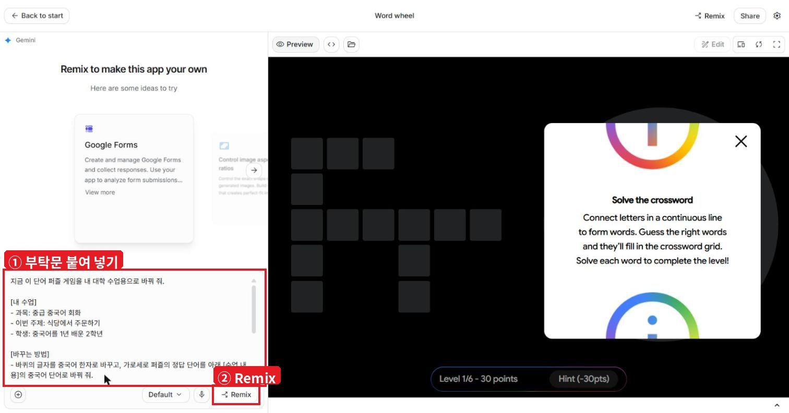
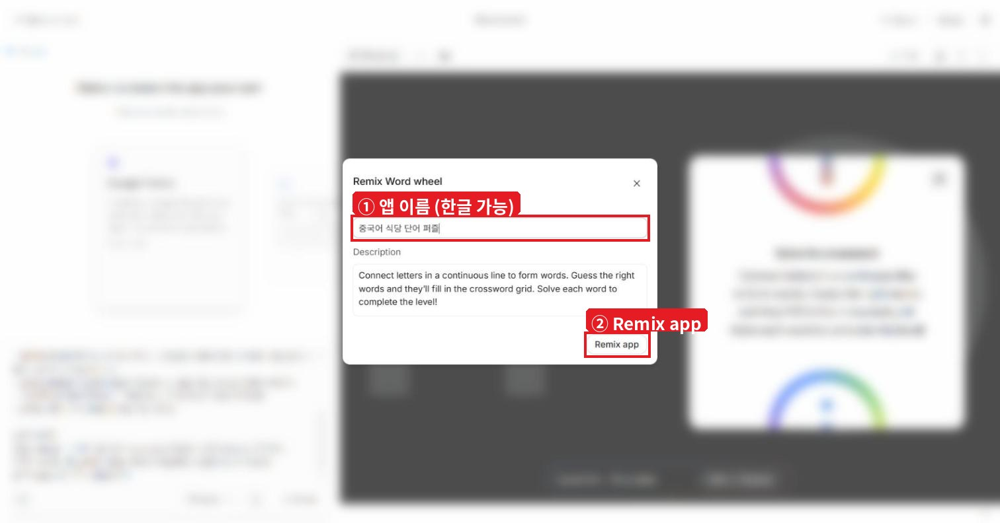
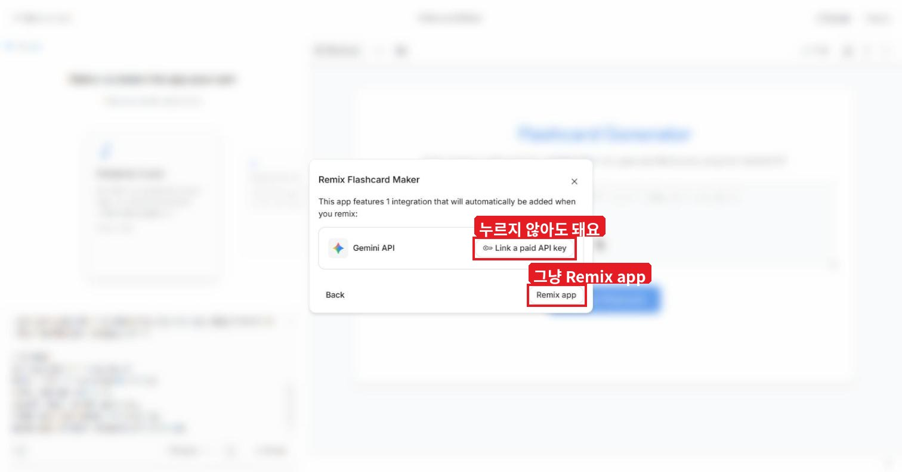
부탁문 만들기
수업 내용이 아직 없다면 강의자료 PDF를 대화창의 +로 첨부하고, [수업 내용] 칸에 "첨부한 강의자료의 핵심 용어 8개"라고만 써도 됩니다.
보내고 기다리기
- 왼쪽 대화창에 붙여 넣고 보내기
- AI가 코드를 고치는 동안 5~10분 기다립니다. 그동안 다른 템플릿을 하나 더 열어 구경해 보세요
- 오른쪽 미리보기에서 직접 해 보기
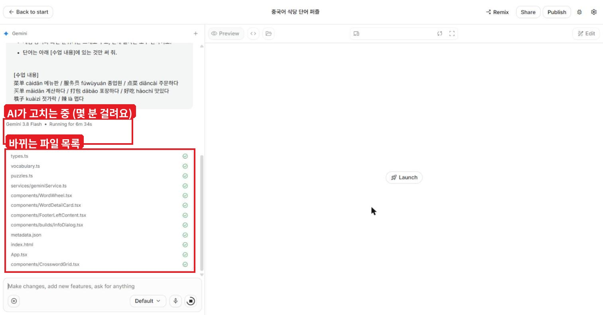
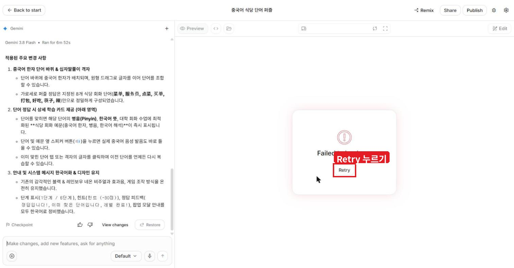
한 가지씩 말로 고치기
"더 좋게 해 줘"처럼 넓게 말하지 말고, "○○만 바꿔 줘. 다른 부분은 그대로 둬."라고 말합니다.
내용
- 문제 순서와 보기 순서가 매번 무작위로 나오게 해 줘. 다른 부분은 그대로 둬.
- 틀린 문제만 모아서 다시 풀 수 있는 버튼을 끝 화면에 추가해 줘.
- 게임에 들어간 내용 중 [수업 내용]과 다른 것이 있는지 점검해서 목록으로 알려 줘. 아직 고치지는 마.
화면
- 아직 영어로 남은 글자를 모두 한국어로 바꿔 줘.
- 강의실 화면에 띄워도 잘 보이게 글자와 버튼을 크게 해 줘.
- 휴대폰에서 해도 화면이 잘리지 않게 고쳐 줘.
수업 운영
- 시작할 때 팀 이름 2개를 넣고, 두 팀이 번갈아 하며 점수를 겨루게 바꿔 줘.
- 끝나면 점수와 함께 '오늘 꼭 기억할 개념 3가지'를 정리해 보여 줘.
고장 났을 때
- 미리보기 화면이 하얗게 비어 있어. 원인을 찾아서 고쳐 줘.
- 방금 바꾼 것은 되돌리고, 그 전 상태에서 다시 해 줘.
✓ 내 과목 내용으로 게임이 돌아가고, 한 판 끝까지 해 볼 수 있으면 성공!
리믹스 활용 사례 참고
막히거나 아이디어가 필요할 때 펼쳐 보세요. ④에서 직접 부탁문을 만들어 본 뒤 열어 보시길 권해요. 각 사례에는 원본 화면, 대진대 과목으로 바꾼 예시 부탁문, 이어서 고치는 말이 들어 있어요.
완성본 열기 링크는 강사가 만든 앱이고, 모두 Public으로 열어 두었어요. Google 계정에 로그인한 상태에서 열면 바로 해 볼 수 있어요. 오른쪽 위에 Remix 버튼이 보이면 눌러서 내 것으로 복사해 고쳐 쓰셔도 돼요.
강사가 직접 만들어 본 완성 사례
간호 개념 체스 ★★★ 무거움 기본간호학 · 약 9분
이렇게 써요 상대 말을 잡으려면 활력징후 문제를 맞혀야 하는 3D 체스예요. 시작 화면, 메뉴, 점수판까지 모두 한국어로 바뀌었고, AI는 준 [수업 내용] 8가지 안에서만 문제를 냈어요. 부탁문은 시연 ①에 있어요.
중국어 식당 단어 퍼즐 ★ 쉬움 중급 중국어 회화 · 약 7분
이렇게 써요 바퀴의 한자를 이어 식당 단어를 맞히면 병음·뜻·예문이 나오는 퍼즐이에요. AI가 스스로 발음 듣기 버튼까지 붙였어요. 부탁문은 시연 ②에 있어요.
3D 심장 탐험 (템플릿 없이 새로 만들기) ★★ 보통 기본간호학 · 간호·보건 추천
이렇게 써요 인체를 보여 주는 템플릿은 따로 없어서, AI 스튜디오 첫 화면의 Three.js 3D scenes로 처음부터 만들었어요. 3D 심장을 돌려 보고, 부위를 누르면 이름과 기능이 나오고, 혈액 흐름 보기와 확인 퀴즈가 있어요.
만드는 길
기본간호학 수업에서 쓸 '3D 심장 탐험' 웹앱을 Three.js로 만들어 줘. [내 수업] - 과목: 기본간호학 - 이번 주제: 심장의 구조와 혈액 순환 - 학생: 간호학과 1학년 [화면] - 가운데에 교육용으로 단순화한 3D 심장 모형. 마우스로 돌리고 휠로 확대할 수 있게. - 부위마다 색을 다르게: 우심방, 우심실, 좌심방, 좌심실, 대동맥, 폐동맥, 상대정맥, 하대정맥, 폐정맥 - 부위를 누르면 그 부위가 빛나고, 오른쪽 카드에 이름과 기능이 나오게. 기능은 아래 [수업 내용]의 문장 그대로. - [혈액 흐름 보기] 버튼: 온몸 → 상·하대정맥 → 우심방 → 우심실 → 폐동맥 → 폐 → 폐정맥 → 좌심방 → 좌심실 → 대동맥 → 온몸 순서로, 해당 부위가 차례로 빛나고 작은 빛 입자가 흐르게. 정맥혈은 파란색, 동맥혈은 빨간색. - [확인 퀴즈] 버튼: "○○은 어디일까요?" 문제가 나오면 학생이 3D 모형에서 부위를 눌러 답하기. 5문제, 끝나면 점수와 틀린 부위 다시 보기. - 화면의 모든 글자는 한국어로. 시작 화면에 과목명과 주제를 보여 줘. - 휴대폰에서도 손가락으로 돌리고 누를 수 있게. [수업 내용] - 우심방: 상대정맥과 하대정맥으로 온몸의 정맥혈을 받는다 - 우심실: 정맥혈을 폐동맥으로 내보내 폐로 보낸다 - 좌심방: 폐정맥으로 폐에서 산소를 받은 동맥혈을 받는다 - 좌심실: 동맥혈을 대동맥으로 내보내 온몸으로 보낸다. 네 방 가운데 벽이 가장 두껍다 - 대동맥: 좌심실에서 나온 혈액을 온몸으로 보내는 가장 큰 동맥 - 폐동맥: 우심실의 정맥혈을 폐로 보낸다 - 상대정맥·하대정맥: 온몸의 정맥혈을 우심방으로 모은다 - 폐정맥: 폐에서 산소를 받은 혈액을 좌심방으로 보낸다 [반드시 지킬 것] - 설명과 퀴즈는 [수업 내용]에 있는 것만 쓰고, 없는 내용은 지어내지 마. - 학생 이름·학번은 받지 마.
완성 화면
3D 심장 모형을 실제 심장 모양에 더 가깝게 다듬어 줘. 기능과 화면 구성은 그대로 두고 모형만 바꿔 줘. - 심장 전체는 주먹 크기의 둥근 원뿔 모양으로, 뾰족한 끝(심첨)이 왼쪽 아래를 향하게. - 앞에서 볼 때 우심실이 앞쪽 대부분을, 좌심실이 왼쪽 가장자리와 심첨을 차지하게. 좌심실 벽이 가장 두껍게. - 우심방은 오른쪽 위, 좌심방은 뒤쪽 위에 두기. - 대동맥은 위로 올라가 활처럼 휘게, 폐동맥은 대동맥 앞에서 나와 둘로 갈라지게. 상대정맥은 위에서, 하대정맥은 아래에서 우심방으로 들어가게. - 원기둥과 공을 이어 붙인 느낌이 아니라 매끄럽게 이어진 모양으로, 부위 경계는 색으로만 구분.
같은 방법으로 폐, 신장, 뇌, 뼈대처럼 다른 기관도 만들 수 있어요. [수업 내용]만 바꿔 넣으세요.
✨ 우와! 오늘 오신 학과 쇼케이스
강사가 미리 만들어 둔 보여 주기용 완성본이에요. 3D로 움직이거나, 앱 안의 AI가 대답합니다. 하나에 10~15분 걸려서 오늘 실습용은 아니고, "이런 것까지 되는구나"를 느끼는 용도예요. 부탁문은 그대로 복사해 가셔도 됩니다.
오늘 오시는 학과 사례 · 따라 하기 쉬운 버전
10분 안팎이면 만들어지는 간단한 버전이에요. 오늘 직접 해 보신다면 이쪽부터 시작하세요. 쓴 부탁문을 그대로 복사해 과목·내용만 바꿔 쓰시면 됩니다.
🗂️ 교직원 업무용 사례
수업 대신 내가 안내·교육하는 사람에게 보여 줄 도구예요. 부서 이름과 내용만 바꿔 쓰세요.
다른 학과 사례 더 보기 법학·교직·국제통상·대순·특수교육·산업디자인
오늘 참석 학과는 아니지만, 아이디어를 빌려 오기 좋은 사례예요.
5단계 · 백엔드·배포 (파이어베이스 · 넷리파이 · 깃허브 · 버셀)
지금까지 만든 앱은 대부분 내 화면 안에서만 기록이 남아요. (1단계 캔바 코드는 예외로, 입력한 내용이 캔바 시트에 모여요.) 학생 30명의 답이 한곳에 모이려면 저장소(백엔드)가 필요하고, 학생이 휴대폰이나 PC로 들어오려면 인터넷 주소(배포)가 필요해요.
- 캔바 도움말 기준으로 캔바 시트 하나는 최대 1,000행 · 104열, 편집 가능한 칸은 모두 20,800칸까지예요.
- 예를 들어 한 번 제출에 10칸(이름·답 등)을 쓰면 약 2,000번 제출이면 가득 차요. 한 학기 내내 여러 반이 쓰는 도구라면 금방 찰 수 있어요.
- 캔바 코드로 게시한 사이트는 사이트를 여는 사람 누구나 모인 데이터에 접근할 수 있다는 안내가 떠요. 개인정보나 성적은 넣지 마세요.
- 그래서 한 수업·한 번 쓰는 도구(커피 주문, 조 뽑기, 즉석 투표)는 캔바 시트로 충분하고, 학기 내내 쌓이고 권한을 나눠야 하는 도구는 아래 파이어베이스가 맞아요.
| 저장소 없이 (1~4단계) | 저장소를 붙이고 배포하면 (5단계) |
|---|---|
| 한 사람이 혼자 쓰는 학습 도구, 게임, 시뮬레이터 | 여러 사람이 동시에 쓰고 결과가 모이는 수업 도구 |
| 예: 개념 퀴즈, 3D 공정 실험실, 식판 맞추기 | 예: 실시간 질문 보드, 조별 주제 신청·승인, 1분 이해도 체크 통계 |
제미나이 캔버스나 AI 스튜디오로 만든 웹앱 (2·4단계)
모든 사람의 답이 쌓이는 무료 데이터 저장소
넷리파이 · 깃허브 · 버셀 중 하나로 인터넷 주소 받기
B. 파이어베이스로 데이터 연동하기
1 프로젝트 만들기 눌러서 펼치기
- console.firebase.google.com 접속 → 새 Firebase 프로젝트 만들기
- 이름을 영어로:
myclass-내이름(예: myclass-kim) → 계속 - 'Firebase의 Gemini'는 그대로 두고 계속
- Google 애널리틱스는 꺼도 됩니다(단계가 줄어요) → 프로젝트 만들기
- "프로젝트가 준비되었습니다" → 계속. 요금제는 무료(Spark)예요.
캡처의 빨간 네모가 누를 곳이고, 번호는 누르는 순서예요.
2 웹 앱 등록하고 설정 코드(firebaseConfig) 복사하기 눌러서 펼치기
- 프로젝트 첫 화면에서 앱 추가 → </> (웹) 아이콘
- 앱 닉네임:
myclass→ Firebase 호스팅은 체크하지 않음 → 앱 등록 - <script> 태그 사용을 고르면
const firebaseConfig = { ... };가 나와요. 중괄호까지 통째로 복사해 메모장에 붙여 두기 → 콘솔로 이동
설정 코드는 나중에 ⚙ 프로젝트 설정 → 일반 → 내 앱에서 다시 볼 수 있어요. apiKey가 웹 페이지에 보여도 괜찮아요. 창고를 찾아오는 '주소'일 뿐이고, 데이터는 6번의 규칙이 지킵니다.
3 데이터 저장소(Firestore) 만들기 눌러서 펼치기
- 왼쪽 메뉴 데이터베이스 및 스토리지 → Firestore → 데이터베이스 만들기
- 버전은 Standard 그대로 → 다음
- 위치: asia-northeast3 (Seoul) → 다음 (한 번 정하면 바꿀 수 없어요)
- 시작 모드: 프로덕션 모드 → 만들기
4 익명 로그인 켜기 꼭! 눌러서 펼치기
학생이 회원가입 없이 '익명 손님'으로 들어오게 하는 설정이에요. 켜지 않으면 로그인 오류가 나고 데이터가 저장되지 않아요.
- 왼쪽 메뉴 보안 → Authentication (처음이면 시작하기)
- 기본 제공업체의 익명 클릭 (목록이 안 보이면 위쪽 로그인 방법 탭 → 새 제공업체 추가)
- 사용 설정 스위치를 켜고 → 저장 → 목록에 '익명 · 사용 설정됨'이 보이면 완료
이 단계를 빼먹으면 auth/admin-restricted-operation 같은 오류가 떠요.
5 내 웹앱에 창고 연결하기 (제미나이 캔버스) 눌러서 펼치기
2단계에서 만든 캔버스 대화창에서 이어서 보내세요. 아래 칸에 2번에서 복사한 설정 코드를 붙여 넣고 적용하기를 누르면 부탁문에 자동으로 들어가요. 부탁문의 [ ] 안은 내 앱에 맞게 바꾸세요.
설정 코드는 이 화면 안에서만 쓰이고 어디에도 저장되지 않아요. 적용한 뒤 아래 부탁문의 복사를 누르세요.
지금 만든 웹앱의 디자인과 기능은 그대로 두고, [학생이 입력한 답]이 모든 사람의 화면에 실시간으로 모이도록 Firebase Firestore에 저장하게 바꿔 줘.
- Firebase 웹 SDK는 CDN(gstatic) 모듈 방식으로 불러오고, HTML 한 파일로 만들어 줘.
- 학생은 익명 로그인(signInAnonymously)으로 들어오게 해 줘.
- 데이터는 [classes/수업이름/answers] 경로에 저장하고, onSnapshot으로 실시간으로 보여 줘.
- 이름·학번·연락처는 받지 마. 필요하면 번호만 받아.
- 아래 firebaseConfig만 쓰고, 다른 Firebase 설정이나 실행 환경 변수(__firebase_config, __app_id 등)는 쓰지 마.
- 마지막에 이 앱에 맞는 Firestore 보안 규칙도 따로 써 줘. 누구나 쓸 수 있되, 글자 수 제한과 남의 글 수정 금지를 넣어 줘.
[firebaseConfig]
(여기에 2번에서 복사한 const firebaseConfig = { ... }; 를 붙여 넣기)"다른 Firebase 설정이나 실행 환경 변수는 쓰지 마" 줄이 중요해요. 이 줄이 없으면 캔버스 안에서만 되고, 파일로 저장해 배포하면 안 됩니다.
- 캔버스 오른쪽 위 내보내기 옆 ⌄ → 코드 다운로드 → 파일 이름을
index.html로 저장 - 파일을 더블클릭해 크롬으로 열고 입력해 보기 → 새로고침해도 남아 있으면 성공
파일 이름은 반드시 index.html. index (1).html이나 index.html.txt가 되면 고쳐 주세요.
AI 스튜디오에서 만들 때는? (Enable Firebase)
AI 스튜디오는 부탁문에 "데이터는 Firebase에 저장해 줘"라고 쓰면 Enable Firebase 승인 창이 떠요. 승인하면 1~3분 뒤 창고가 자동으로 붙고, 오른쪽 위 Publish로 주소(…run.app)까지 받을 수 있어요. 이 경우 아래 C 배포는 하지 않아도 됩니다.
지금 이 앱의 데이터베이스 보안 규칙을 쉬운 한국어로 설명해 줘. 아래 표로. | 누가 | 읽기(보기) | 쓰기(제출·수정·삭제) | 대상: 로그인하지 않은 사람 / 로그인한 학생 / 다른 학생의 제출 / 교수(나) 그리고 학생이 다른 학생의 제출을 볼 수 있거나, 로그인 없이 누구나 쓸 수 있는 부분이 있으면 따로 경고해 줘.
6 보안 규칙 바꾸기 꼭! 눌러서 펼치기
- Firestore 위쪽 규칙 탭
- 5번에서 제미나이가 써 준 규칙을 복사 → 코드 창을 누르고 Ctrl+A → Ctrl+V로 통째로 바꾸기
- 위쪽 게시 → "반영되는 데 최대 1분" 알림이 뜨면 완료
예시 규칙 보기 · 포스트잇 질문 보드
rules_version = '2';
service cloud.firestore {
match /databases/{database}/documents {
match /boards/{boardId} {
allow read, write: if true;
match /notes/{noteId} {
allow read: if true;
allow create: if request.resource.data.text is string
&& request.resource.data.text.size() > 0
&& request.resource.data.text.size() <= 200
&& request.resource.data.likes == 0
&& request.resource.data.hidden == false;
allow update: if request.resource.data.diff(resource.data).affectedKeys().hasOnly(['likes', 'hidden']);
allow delete: if true;
}
}
}
}누구나 읽고 쓰되, 200자 넘는 글과 공감 수 조작은 막는 수업용 규칙이에요. 경로(boards·notes)가 내 앱과 다르면 그대로 쓰지 말고 5번에서 받은 규칙을 쓰세요.
- 다른 기기(휴대폰)로 들어가 남의 글을 고치거나 지울 수 있는지 직접 시험해 보세요
- 주소를 아는 사람은 누구나 쓸 수 있어요. 이름·학번·연락처·성적은 받지 마세요
- 창고에 쌓인 데이터는 Firestore → 데이터 탭에서 볼 수 있고, 학기가 끝나면 지워 주세요
C. 인터넷 주소 받기 · 배포 세 가지 방법
셋 중 하나만 하면 돼요. 처음이라면 넷리파이를 권해요.
| 방법 | 올리는 법 | 좋은 점 | 주의 |
|---|---|---|---|
| ① 넷리파이 가장 쉬움 | 폴더를 끌어다 놓기 | 가입 후 1분이면 주소가 생김 | 올린 뒤 Make public을 눌러야 학생이 들어옴 |
| ② 깃허브 페이지 | 저장소에 파일 올리기 | 고친 기록이 남고, 파일 보관도 됨 | 저장소가 공개(Public)여야 무료 |
| ③ 버셀 | 깃허브 저장소 연결 | 깃허브 파일을 고치면 자동으로 다시 배포 | 깃허브에 먼저 올려야 함 |
① 넷리파이 · 폴더 끌어다 놓기 눌러서 펼치기
- 바탕화면에 새 폴더(예:
내수업앱)를 만들고 그 안에index.html넣기 - app.netlify.com → Log in with Google (개인 Gmail, 이것만으로 가입까지 돼요)
- 처음이면 질문 화면: 용도 School → 경험 Beginner → 만들 것 Web app → 역할 Teacher → 알게 된 곳 Someone else
- Deploy your first project 화면에서 Skip this step for now
- Projects 화면 아래 Upload your project files 칸에 폴더를 끌어다 놓기 →
https://○○○.netlify.app주소가 생기면 성공 - Make public을 눌러 공개로 바꾸기 → 다른 기기(휴대폰이나 다른 PC)로 주소를 열어 바로 보이면 완료
- 주소 바꾸기: Domain 칸 Edit → 앞부분을 영문 소문자로 (예:
daejin-stats) → ✓
파일을 고친 뒤에는 프로젝트의 Deploys 화면에 폴더를 다시 끌어다 놓으면 같은 주소로 바뀌어요.
② 깃허브 페이지 · 저장소에 올려 주소 받기 눌러서 펼치기
- github.com 가입 (개인 이메일) → 오른쪽 위 + → New repository
- Repository name: 영문 소문자 (예:
stats-check) → Public 선택 → Create repository - 새 저장소 화면의 uploading an existing file 링크 (또는 Add file → Upload files) →
index.html을 끌어다 놓기 → 아래 Commit changes - 저장소 위쪽 Settings → 왼쪽 Pages → Source: Deploy from a branch → Branch: main · /(root) → Save
- 1~2분 뒤 Pages 화면 위에
https://내아이디.github.io/stats-check/주소가 뜨면 완료 (Visit site)
파일을 고칠 때는 같은 이름의 index.html을 다시 Upload files로 올리고 Commit하면, 1~2분 뒤 같은 주소에 반영돼요. 저장소가 공개라 코드가 보여요. 개인정보나 비밀번호를 코드에 넣지 마세요.
③ 버셀 · 깃허브 저장소를 연결해 배포 눌러서 펼치기
- 먼저 ②의 1~3까지 해서 깃허브 저장소에
index.html을 올려 두기 - vercel.com → Sign Up → Continue with GitHub (요금제는 무료 Hobby)
- Add New… → Project → 내 저장소 옆 Import
- 설정은 그대로 두고(Framework Preset: Other) Deploy
- 축하 화면이 나오면
https://저장소이름.vercel.app주소 완성
버셀은 깃허브와 이어져 있어서, 깃허브에서 index.html을 고쳐 Commit하면 자동으로 다시 배포돼요.
- 다른 기기(휴대폰이나 옆자리 PC, 로그인 안 된 상태)로 주소를 열어 입력해 보기 → 내 화면에 실시간으로 뜨면 성공
- 구글 로그인을 쓰는 앱이라면: 파이어베이스 Authentication → 설정 → 승인된 도메인에 배포 주소(예: daejin-stats.netlify.app)를 추가해야 로그인이 돼요. 익명 로그인만 쓰면 하지 않아도 돼요
- 주소는 QR로 만들어 수업 슬라이드에 붙여 두세요 (크롬 주소창 공유 → QR 코드)
4단계 · 막혔을 때 (AI 스튜디오)
- 화면 가운데 버튼부터 누르기: Retry, Reload the app, Launch 중 보이는 것.
- 그래도 그대로면 크롬 새로고침(F5). 만든 앱은 사라지지 않아요. 강사도 미니골프가 이렇게 해서 열렸어요.
- 그래도 안 되면 왼쪽 아래 칸에 이렇게 보내기: "미리보기가 안 떠. 다시 빌드해 줘." (AI에게 한 번 더 부탁하는 거라 하루 한도를 1번 써요.)
| 이런 일이 생기면 | 이렇게 해 보세요 |
|---|---|
| Gemini API · Link a paid API key 창이 떠요 | 유료 키는 필요 없어요. 그냥 Remix app을 누르세요. |
| 화면이 까맣고 1 error running the code가 떠요 | 그 옆의 Fix를 누르면 AI가 고쳐요. 마이크·카메라를 쓰는 템플릿은 허용 창에서 Allow를 눌러야 해요. |
| Remix 버튼이 안 보여요 | 로그인했는지 확인. 개인 Gmail로 다시 로그인하고, 학교 계정이면 바꿔 주세요. |
| Failed to load app이 떠요 | 가운데 Retry를 누르세요. 그래도 안 되면 크롬 새로고침(F5). |
| 게임이 회색으로 덮이고 Launch!만 보여요 | 크롬 새로고침(F5)을 누르면 게임이 다시 움직여요. |
| "Waiting for content"나 "Generating app"에서 한참 멈춰 있어요 | AI는 다 만들었는데 미리보기만 늦게 뜨는 경우가 많아요. F5 → 그래도 안 되면 "미리보기가 안 떠. 다시 빌드해 줘." |
| 저절로 The task was canceled가 떠요 | 같은 부탁문을 왼쪽 아래 칸에 다시 붙여 넣고 보내세요. (강사도 창의발명, 생성형 AI 용어 퍼즐에서 겪었어요.) |
| An internal error occurred가 떠요 | 그 줄 오른쪽의 Retry를 누르세요. AI가 "하던 일을 마저 해 줘"로 이어서 만들어요. 오른쪽에 빨간 코드 오류가 보여도 다 만들어지면 사라져요. |
| 미리보기가 하얗게 비어요 | "미리보기 화면이 하얗게 비어 있어. 원인을 찾아서 고쳐 줘." 두 번 해도 안 되면 템플릿을 새로 리믹스. |
| 아직 영어가 많아요 | "아직 영어로 남은 글자를 모두 한국어로 바꿔 줘." |
| 내가 안 넣은 내용이 들어갔어요 | "[수업 내용]에 없는 문제는 모두 빼 줘." |
| 너무 오래 걸려요 | 무거운(★★★) 템플릿은 5~15분 걸려요. 창을 닫지 말고 기다리세요. 기다리는 동안 다음에 보낼 고치기 부탁을 메모해 두세요. |
| 미리보기에 App has been paused가 떠요 | 가운데 Reload the app을 누르세요. 다른 탭에 오래 있다 오면 생겨요. |
| 플로우를 계속하려면 업그레이드하세요 · 일일 한도에 도달했습니다가 떠요 | 하루에 AI에게 부탁할 수 있는 횟수를 다 썼다는 뜻이에요. 다음 날 한도가 다시 차요. 그 사이엔 옆 선생님 화면으로 같이 보거나, 다른 Google 계정으로 로그인하세요. 업그레이드 버튼은 누르지 않아도 돼요. 미리 막는 법: 고치기 부탁은 한 번에 2~3가지씩 모아서 보내고, 리믹스를 여러 개 동시에 돌리지 마세요. |
| 고치다가 망가졌어요 | "방금 바꾼 것은 되돌려 줘." 또는 템플릿을 다시 열어 처음부터 리믹스. |